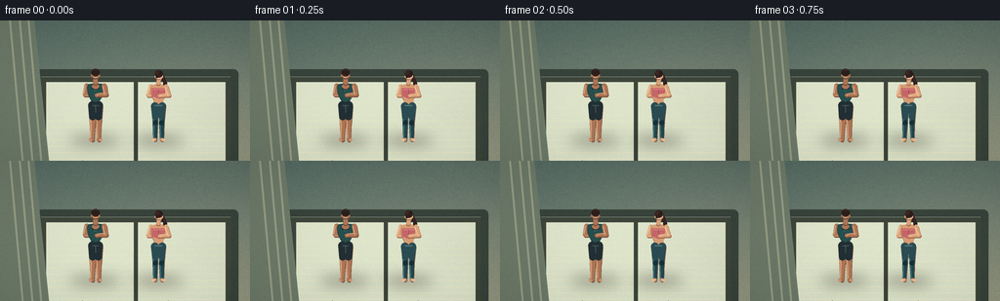
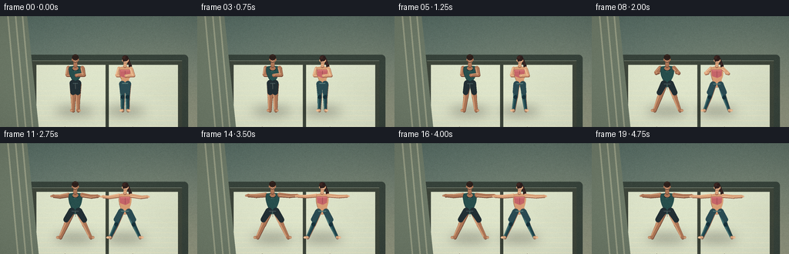
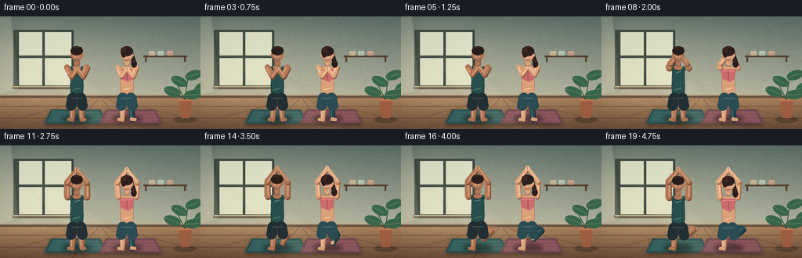
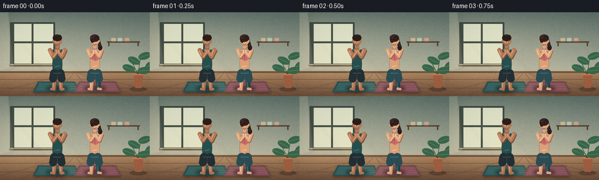

CODING AGENTS AS PIXEL WORLD MODELS
traex/DeepSeek-V4.1-Flash · instance_preservation_0030
点击播放 · 原生 RGB 像素
逐轮保存的候选
回放视频、检查图与代码变化。
每份候选均可单独播放。实际图片检查记录在下方工具轨迹中。
候选 01播放与检查图
点击播放 · 原生 RGB 像素


展开代码变化
--- 上一保存版本
+++ 本次保存版本
@@ -0,0 +1,567 @@
+from pathlib import Path
+import math
+
+import cv2
+import numpy as np
+from PIL import Image, ImageDraw, ImageFilter
+
+import artifact_io
+
+
+W, H = 256, 144
+SS = 4
+OW, OH = W * SS, H * SS
+N = 20
+FPS = 4.0
+CASE = Path(__file__).resolve().parent
+
+
+def mix(a, b, t):
+ t = max(0.0, min(1.0, t))
+ return tuple(int(round(a[i] * (1.0 - t) + b[i] * t)) for i in range(3))
+
+
+def smoothstep(x):
+ x = max(0.0, min(1.0, x))
+ return x * x * (3.0 - 2.0 * x)
+
+
+def ease_in_out(x):
+ x = max(0.0, min(1.0, x))
+ return 0.5 - 0.5 * math.cos(math.pi * x)
+
+
+def lerp(a, b, t):
+ return a + (b - a) * t
+
+
+def p_lerp(a, b, t):
+ return (lerp(a[0], b[0], t), lerp(a[1], b[1], t))
+
+
+def capsule(draw, p1, p2, r1, r2, fill):
+ x1, y1 = p1
+ x2, y2 = p2
+ dx, dy = x2 - x1, y2 - y1
+ length = math.hypot(dx, dy)
+ if length < 1e-5:
+ draw.ellipse((x1 - r1, y1 - r1, x1 + r1, y1 + r1), fill=fill)
+ return
+ nx, ny = -dy / length, dx / length
+ poly = [
+ (x1 + nx * r1, y1 + ny * r1),
+ (x2 + nx * r2, y2 + ny * r2),
+ (x2 - nx * r2, y2 - ny * r2),
+ (x1 - nx * r1, y1 - ny * r1),
+ ]
+ draw.polygon(poly, fill=fill)
+ draw.ellipse((x1 - r1, y1 - r1, x1 + r1, y1 + r1), fill=fill)
+ draw.ellipse((x2 - r2, y2 - r2, x2 + r2, y2 + r2), fill=fill)
+
+
+def highlight_capsule(draw, p1, p2, width, fill, offset=0.34):
+ x1, y1 = p1
+ x2, y2 = p2
+ dx, dy = x2 - x1, y2 - y1
+ length = max(1e-5, math.hypot(dx, dy))
+ nx, ny = -dy / length, dx / length
+ ox, oy = nx * width * offset, ny * width * offset
+ draw.line(
+ [(x1 + ox, y1 + oy), (x2 + ox, y2 + oy)],
+ fill=fill,
+ width=max(1, int(round(width * 0.34))),
+ )
+
+
+def cubic(p0, p1, p2, p3, steps=10):
+ out = []
+ for i in range(1, steps + 1):
+ t = i / steps
+ mt = 1.0 - t
+ x = mt**3 * p0[0] + 3 * mt**2 * t * p1[0] + 3 * mt * t**2 * p2[0] + t**3 * p3[0]
+ y = mt**3 * p0[1] + 3 * mt**2 * t * p1[1] + 3 * mt * t**2 * p2[1] + t**3 * p3[1]
+ out.append((x, y))
+ return out
+
+
+def rounded_polygon(draw, points, fill):
+ draw.polygon(points, fill=fill)
+
+
+def soft_layer(size, blur):
+ layer = Image.new("RGBA", size, (0, 0, 0, 0))
+ return layer, ImageDraw.Draw(layer)
+
+
+def paste_soft(base, layer, blur):
+ base.alpha_composite(layer.filter(ImageFilter.GaussianBlur(blur)))
+
+
+def build_background():
+ yy, xx = np.mgrid[0:OH, 0:OW].astype(np.float32)
+ horizon = 353 * SS
+ wall_t = np.clip(yy / horizon, 0, 1)
+ top = np.array([83, 105, 98], dtype=np.float32)
+ bottom = np.array([174, 178, 155], dtype=np.float32)
+ wall = top[None, None, :] * (1 - wall_t[..., None]) + bottom[None, None, :] * wall_t[..., None]
+
+ floor_t = np.clip((yy - horizon) / (OH - horizon), 0, 1)
+ floor_top = np.array([159, 119, 82], dtype=np.float32)
+ floor_bottom = np.array([102, 70, 51], dtype=np.float32)
+ floor = floor_top[None, None, :] * (1 - floor_t[..., None]) + floor_bottom[None, None, :] * floor_t[..., None]
+ image = np.where((yy < horizon)[..., None], wall, floor)
+
+ # Warm window glow and a soft pool of light behind the two figures.
+ gx, gy = 235 * SS, 194 * SS
+ glow = np.exp(-(((xx - gx) / (245 * SS)) ** 2 + ((yy - gy) / (230 * SS)) ** 2) * 2.0)
+ warm = np.array([255, 220, 162], dtype=np.float32)
+ image = image * (1.0 - 0.24 * glow[..., None]) + warm[None, None, :] * (0.24 * glow[..., None])
+ gx2, gy2 = 525 * SS, 290 * SS
+ glow2 = np.exp(-(((xx - gx2) / (230 * SS)) ** 2 + ((yy - gy2) / (180 * SS)) ** 2) * 2.0)
+ image += np.array([18, 19, 10], dtype=np.float32)[None, None, :] * glow2[..., None]
+
+ # Fine, fixed wall texture.
+ rng = np.random.default_rng(30)
+ noise = rng.normal(0.0, 2.0, (OH // 4, OW // 4)).astype(np.float32)
+ noise = np.asarray(Image.fromarray(noise, mode="F").resize((OW, OH), Image.Resampling.BILINEAR))
+ image += noise[..., None]
+ return Image.fromarray(np.clip(image, 0, 255).astype(np.uint8), "RGB").convert("RGBA")
+
+
+def draw_background_details(base):
+ d = ImageDraw.Draw(base)
+ # Window frame and luminous panes.
+ x0, y0, x1, y1 = 42 * SS, 58 * SS, 236 * SS, 323 * SS
+ d.rounded_rectangle((x0 - 8 * SS, y0 - 8 * SS, x1 + 8 * SS, y1 + 8 * SS), radius=5 * SS, fill=(55, 67, 59, 255))
+ glass_top = (222, 229, 203, 255)
+ glass_bottom = (255, 238, 194, 255)
+ d.rectangle((x0, y0, x1, y1), fill=glass_top)
+ for i in range(42):
+ t = i / 41
+ y = int(lerp(y0, y1, t))
+ d.line((x0, y, x1, y), fill=mix(glass_top[:3], glass_bottom[:3], t) + (255,), width=SS)
+ frame = (62, 70, 59, 255)
+ d.rectangle((x0, y0, x1, y0 + 5 * SS), fill=frame)
+ d.rectangle((x0, y1 - 5 * SS, x1, y1), fill=frame)
+ d.rectangle((x0, y0, x0 + 5 * SS, y1), fill=frame)
+ d.rectangle((x1 - 5 * SS, y0, x1, y1), fill=frame)
+ d.rectangle(((x0 + x1) // 2 - 2 * SS, y0, (x0 + x1) // 2 + 2 * SS, y1), fill=frame)
+ d.rectangle((x0, (y0 + y1) // 2 - 2 * SS, x1, (y0 + y1) // 2 + 2 * SS), fill=frame)
+ # A soft curtain edge at the far left.
+ d.polygon(
+ [(0, 0), (35 * SS, 0), (50 * SS, OH), (0, OH)],
+ fill=(110, 123, 105, 255),
+ )
+ for x in (10, 20, 29):
+ d.line((x * SS, 0, (x + 13) * SS, OH), fill=(151, 158, 133, 210), width=2 * SS)
+
+ # Baseboard, then floorboards with perspective lines.
+ d.rectangle((0, 347 * SS, OW, 362 * SS), fill=(102, 83, 67, 255))
+ d.rectangle((0, 347 * SS, OW, 351 * SS), fill=(194, 180, 149, 255))
+ vx, vy = 520 * SS, 302 * SS
+ for bottom_x in range(-180, 1250, 88):
+ d.line((vx, vy, bottom_x * SS, OH), fill=(79, 53, 40, 125), width=SS)
+ for y in (384, 424, 472, 530):
+ d.line((0, y * SS, OW, y * SS), fill=(86, 57, 41, 100), width=SS)
+
+ # Quiet sunlight falling across the room.
+ shafts = Image.new("RGBA", (OW, OH), (0, 0, 0, 0))
+ sd = ImageDraw.Draw(shafts)
+ sd.polygon([(145 * SS, 80 * SS), (246 * SS, 92 * SS), (510 * SS, OH), (372 * SS, OH)], fill=(255, 225, 168, 21))
+ sd.polygon([(215 * SS, 92 * SS), (250 * SS, 96 * SS), (548 * SS, OH), (485 * SS, OH)], fill=(255, 236, 188, 15))
+ paste_soft(base, shafts, 13 * SS)
+
+ # A tall potted plant in the right corner.
+ pot = Image.new("RGBA", (OW, OH), (0, 0, 0, 0))
+ pd = ImageDraw.Draw(pot)
+ pd.ellipse((858 * SS, 493 * SS, 982 * SS, 532 * SS), fill=(39, 33, 28, 100))
+ pd.polygon(
+ [(886 * SS, 406 * SS), (968 * SS, 406 * SS), (951 * SS, 500 * SS), (903 * SS, 500 * SS)],
+ fill=(161, 94, 65, 255),
+ )
+ pd.rectangle((886 * SS, 406 * SS, 968 * SS, 418 * SS), fill=(193, 119, 80, 255))
+ stems = [
+ ((927, 410), (886, 335)),
+ ((927, 410), (950, 300)),
+ ((927, 410), (1001, 345)),
+ ((927, 410), (864, 374)),
+ ((927, 410), (980, 395)),
+ ]
+ for p1, p2 in stems:
+ pd.line((p1[0] * SS, p1[1] * SS, p2[0] * SS, p2[1] * SS), fill=(49, 91, 68, 255), width=3 * SS)
+ leaves = [
+ (867, 320, 905, 353, -22), (950, 286, 987, 319, 18),
+ (983, 335, 1020, 361, 18), (845, 360, 889, 386, -18),
+ (956, 383, 998, 414, 8), (898, 342, 936, 373, -8),
+ ]
+ for lx, ly, rx, ry, angle in leaves:
+ leaf = Image.new("RGBA", (70 * SS, 40 * SS), (0, 0, 0, 0))
+ ld = ImageDraw.Draw(leaf)
+ ld.ellipse((3 * SS, 6 * SS, 66 * SS, 34 * SS), fill=(55, 104, 76, 255))
+ ld.line((8 * SS, 20 * SS, 60 * SS, 20 * SS), fill=(112, 145, 100, 255), width=SS)
+ leaf = leaf.rotate(angle, resample=Image.Resampling.BICUBIC, expand=False)
+ pot.alpha_composite(leaf, ((lx - 5) * SS, (ly - 2) * SS))
+ base.alpha_composite(pot)
+
+ # Two uncluttered mats in dusty teal and rose.
+ shadow = Image.new("RGBA", (OW, OH), (0, 0, 0, 0))
+ sh = ImageDraw.Draw(shadow)
+ sh.polygon([(282 * SS, 447 * SS), (500 * SS, 447 * SS), (526 * SS, 523 * SS), (250 * SS, 523 * SS)], fill=(30, 24, 20, 105))
+ sh.polygon([(548 * SS, 447 * SS), (765 * SS, 447 * SS), (801 * SS, 523 * SS), (514 * SS, 523 * SS)], fill=(30, 24, 20, 105))
+ paste_soft(base, shadow, 7 * SS)
+ mats = Image.new("RGBA", (OW, OH), (0, 0, 0, 0))
+ md = ImageDraw.Draw(mats)
+ md.polygon([(282 * SS, 443 * SS), (500 * SS, 443 * SS), (527 * SS, 518 * SS), (250 * SS, 518 * SS)], fill=(40, 78, 79, 255))
+ md.polygon([(294 * SS, 450 * SS), (489 * SS, 450 * SS), (512 * SS, 510 * SS), (265 * SS, 510 * SS)], fill=(53, 96, 94, 255))
+ md.polygon([(548 * SS, 443 * SS), (765 * SS, 443 * SS), (802 * SS, 518 * SS), (514 * SS, 518 * SS)], fill=(112, 70, 79, 255))
+ md.polygon([(560 * SS, 450 * SS), (753 * SS, 450 * SS), (786 * SS, 510 * SS), (530 * SS, 510 * SS)], fill=(137, 82, 89, 255))
+ for y in range(456, 508, 12):
+ md.line((286 * SS, y * SS, 507 * SS, y * SS), fill=(72, 116, 111, 90), width=SS)
+ md.line((552 * SS, y * SS, 774 * SS, y * SS), fill=(158, 101, 105, 90), width=SS)
+ base.alpha_composite(mats)
+
+ # Thin mat contact shadows and small rolled-mat props.
+ contact = Image.new("RGBA", (OW, OH), (0, 0, 0, 0))
+ cd = ImageDraw.Draw(contact)
+ cd.ellipse((316 * SS, 489 * SS, 485 * SS, 510 * SS), fill=(22, 17, 15, 100))
+ cd.ellipse((575 * SS, 489 * SS, 751 * SS, 510 * SS), fill=(22, 17, 15, 100))
+ paste_soft(base, contact, 5 * SS)
+
+ # Wall shelf with folded towels gives the studio a little scale.
+ shelf = Image.new("RGBA", (OW, OH), (0, 0, 0, 0))
+ sd = ImageDraw.Draw(shelf)
+ sd.rectangle((738 * SS, 186 * SS, 950 * SS, 193 * SS), fill=(87, 63, 47, 255))
+ sd.rectangle((744 * SS, 193 * SS, 750 * SS, 210 * SS), fill=(87, 63, 47, 255))
+ sd.rectangle((938 * SS, 193 * SS, 944 * SS, 210 * SS), fill=(87, 63, 47, 255))
+ for x, col in ((770, (198, 177, 143, 255)), (808, (175, 192, 170, 255)), (850, (196, 150, 127, 255))):
+ sd.rounded_rectangle((x * SS, 164 * SS, (x + 29) * SS, 187 * SS), radius=5 * SS, fill=col)
+ sd.line(((x + 4) * SS, 172 * SS, (x + 25) * SS, 172 * SS), fill=(236, 225, 198, 140), width=SS)
+ base.alpha_composite(shelf)
+ return base
+
+
+def figure_pose(kind, frame):
+ cx = 391.0 if kind == "man" else 649.0
+ floor_y = 489.0
+ leg_e = smoothstep((frame - 2.0) / 8.5)
+ arm_e = smoothstep((frame - 5.0) / 7.5)
+ settle = smoothstep((frame - 12.0) / 4.0)
+ breath = math.sin(max(0.0, frame - 12.0) * math.pi / 4.0) * settle
+ sway = math.sin(frame * math.pi / 9.5) * 0.7
+
+ if kind == "man":
+ hip_half = lerp(14, 19, leg_e)
+ knee_x = lerp(12, 47, leg_e)
+ ankle_x = lerp(13, 79, leg_e)
+ shoulder_half = 36
+ shoulder_y = 268 - 1.2 * breath
+ head_y = 222 - 1.5 * breath
+ hip_y = 353 + 4 * leg_e
+ else:
+ hip_half = lerp(16, 21, leg_e)
+ knee_x = lerp(13, 45, leg_e)
+ ankle_x = lerp(14, 77, leg_e)
+ shoulder_half = 31
+ shoulder_y = 271 - 1.2 * breath
+ head_y = 226 - 1.5 * breath
+ hip_y = 355 + 4 * leg_e
+
+ hip_l = (cx - hip_half + sway, hip_y)
+ hip_r = (cx + hip_half + sway, hip_y)
+ knee_l = (cx - knee_x + sway * 0.7, lerp(419, 421, leg_e))
+ knee_r = (cx + knee_x + sway * 0.7, lerp(419, 422, leg_e))
+ ankle_l = (cx - ankle_x, floor_y)
+ ankle_r = (cx + ankle_x, floor_y)
+ toe_l = (cx - ankle_x - lerp(8, 14, leg_e), floor_y + 1)
+ toe_r = (cx + ankle_x + lerp(8, 14, leg_e), floor_y + 1)
+
+ shoulder_l = (cx - shoulder_half + sway, shoulder_y)
+ shoulder_r = (cx + shoulder_half + sway, shoulder_y)
+ chest = (cx + sway, shoulder_y + 42)
+
+ # Hands travel from a prayer position to a broad warrior-II line.
+ wrist_mountain_l = (cx - 4 + sway, chest[1] - 4)
+ wrist_mountain_r = (cx + 4 + sway, chest[1] - 4)
+ wrist_final_l = (cx - lerp(126, 135, 0), shoulder_y + 3)
+ wrist_final_r = (cx + lerp(126, 135, 0), shoulder_y + 3)
+ wrist_l = p_lerp(wrist_mountain_l, wrist_final_l, arm_e)
+ wrist_r = p_lerp(wrist_mountain_r, wrist_final_r, arm_e)
+ wrist_l = (wrist_l[0], wrist_l[1] - 4.0 * math.sin(math.pi * arm_e))
+ wrist_r = (wrist_r[0], wrist_r[1] - 4.0 * math.sin(math.pi * arm_e))
+
+ elbow_mountain_l = (cx - 43 + sway, shoulder_y + 35)
+ elbow_mountain_r = (cx + 43 + sway, shoulder_y + 35)
+ elbow_final_l = (cx - 86, shoulder_y + 5)
+ elbow_final_r = (cx + 86, shoulder_y + 5)
+ elbow_l = p_lerp(elbow_mountain_l, elbow_final_l, arm_e)
+ elbow_r = p_lerp(elbow_mountain_r, elbow_final_r, arm_e)
+
+ head = (cx + sway + (1.5 if kind == "woman" else 0), head_y)
+ neck = (cx + sway, shoulder_y - 16)
+ return {
+ "cx": cx, "floor_y": floor_y, "leg_e": leg_e, "arm_e": arm_e,
+ "hip_l": hip_l, "hip_r": hip_r, "knee_l": knee_l, "knee_r": knee_r,
+ "ankle_l": ankle_l, "ankle_r": ankle_r, "toe_l": toe_l, "toe_r": toe_r,
+ "shoulder_l": shoulder_l, "shoulder_r": shoulder_r, "chest": chest,
+ "elbow_l": elbow_l, "elbow_r": elbow_r, "wrist_l": wrist_l, "wrist_r": wrist_r,
+ "head": head, "neck": neck, "breath": breath, "sway": sway,
+ }
+
+
+def draw_arm(d, p, side, kind, behind=False):
+ if kind == "man":
+ skin, dark, light = (174, 118, 86, 255), (118, 73, 55, 255), (213, 160, 122, 255)
+ upper, fore, wrist_r = 10.0, 8.3, 7.0
+ else:
+ skin, dark, light = (219, 164, 123, 255), (154, 100, 77, 255), (244, 197, 157, 255)
+ upper, fore, wrist_r = 8.4, 7.1, 6.2
+ shoulder = p["shoulder_l"] if side < 0 else p["shoulder_r"]
+ elbow = p["elbow_l"] if side < 0 else p["elbow_r"]
+ wrist = p["wrist_l"] if side < 0 else p["wrist_r"]
+ # A restrained cast shadow keeps the anatomy from looking flat.
+ capsule(d, (shoulder[0] + 2.5, shoulder[1] + 4.0), (elbow[0] + 2.5, elbow[1] + 4.0), upper, upper * 0.86, dark)
+ capsule(d, (elbow[0] + 2.5, elbow[1] + 4.0), (wrist[0] + 2.5, wrist[1] + 4.0), fore, wrist_r, dark)
+ capsule(d, shoulder, elbow, upper, upper * 0.86, skin)
+ capsule(d, elbow, wrist, fore, wrist_r, skin)
+ highlight_capsule(d, shoulder, elbow, upper * 1.5, light, 0.36)
+ highlight_capsule(d, elbow, wrist, fore * 1.4, light, 0.36)
+ # Hands become flat, extended palms in the warrior pose.
+ hand_end = (wrist[0] + side * lerp(4.0, 12.0, p["arm_e"]), wrist[1] + lerp(0.5, 2.0, p["arm_e"]))
+ capsule(d, wrist, hand_end, wrist_r, 4.8 if kind == "man" else 4.2, skin)
+ d.ellipse((hand_end[0] - 3, hand_end[1] - 2, hand_end[0] + 3, hand_end[1] + 2), fill=light)
+
+
+def draw_leg(d, p, side, kind):
+ hip = p["hip_l"] if side < 0 else p["hip_r"]
+ knee = p["knee_l"] if side < 0 else p["knee_r"]
+ ankle = p["ankle_l"] if side < 0 else p["ankle_r"]
+ toe = p["toe_l"] if side < 0 else p["toe_r"]
+ if kind == "man":
+ skin, dark, light = (174, 118, 86, 255), (116, 72, 54, 255), (212, 158, 119, 255)
+ thigh_r, calf_r, ankle_r = 15.5, 11.5, 8.0
+ else:
+ skin, dark, light = (219, 164, 123, 255), (153, 100, 77, 255), (243, 195, 153, 255)
+ thigh_r, calf_r, ankle_r = 13.8, 10.2, 7.2
+
+ capsule(d, (hip[0] + 2, hip[1] + 3), (knee[0] + 2, knee[1] + 3), thigh_r, calf_r * 1.05, dark)
+ capsule(d, (knee[0] + 2, knee[1] + 3), (ankle[0] + 2, ankle[1] + 3), calf_r, ankle_r, dark)
+
+ if kind == "woman":
+ leg_col, leg_hi, leg_shadow = (33, 71, 78, 255), (66, 111, 112, 255), (22, 49, 58, 255)
+ capsule(d, hip, knee, thigh_r, calf_r * 1.05, leg_col)
+ capsule(d, knee, ankle, calf_r, ankle_r, leg_col)
+ highlight_capsule(d, hip, knee, thigh_r * 1.5, leg_hi, 0.38)
+ highlight_capsule(d, knee, ankle, calf_r * 1.45, leg_hi, 0.38)
+ capsule(d, knee, (knee[0], knee[1] + 2), calf_r * 0.9, calf_r * 0.9, leg_shadow)
+ else:
+ capsule(d, hip, knee, thigh_r, calf_r * 1.05, skin)
+ capsule(d, knee, ankle, calf_r, ankle_r, skin)
+ highlight_capsule(d, hip, knee, thigh_r * 1.5, light, 0.38)
+ highlight_capsule(d, knee, ankle, calf_r * 1.45, light, 0.38)
+
+ capsule(d, ankle, toe, ankle_r * 0.92, 6.5 if kind == "man" else 5.7, skin)
+ d.ellipse((toe[0] - 7, toe[1] - 4, toe[0] + 6, toe[1] + 4), fill=light)
+
+
+def torso_points(p, kind):
+ cx = p["cx"] + p["sway"]
+ sl, sr = p["shoulder_l"], p["shoulder_r"]
+ hl, hr = p["hip_l"], p["hip_r"]
+ if kind == "man":
+ bust_l = (sl[0] - 6, sl[1] + 31)
+ bust_r = (sr[0] + 6, sr[1] + 31)
+ waist_l = (hl[0] - 1, hl[1] - 21)
+ waist_r = (hr[0] + 1, hr[1] - 21)
+ else:
+ bust_l = (sl[0] - 8, sl[1] + 27)
+ bust_r = (sr[0] + 8, sr[1] + 27)
+ waist_l = (hl[0] - 2, hl[1] - 25)
+ waist_r = (hr[0] + 2, hl[1] - 25)
+ pts = [(sl[0] + 4, sl[1] - 4)]
+ pts += cubic((sl[0] + 4, sl[1] - 4), (sl[0] + 12, sl[1] - 9), (sr[0] - 12, sr[1] - 9), (sr[0] - 4, sr[1] - 4), 8)
+ pts += cubic((sr[0] - 4, sr[1] - 4), (bust_r[0], bust_r[1] - 4), (waist_r[0] + 3, waist_r[1] - 4), (waist_r[0], waist_r[1]), 8)
+ pts += cubic(waist_r, (waist_r[0] + 3, waist_r[1] + 13), (hr[0] + 8, hr[1] - 4), (hr[0] + 3, hr[1] + 7), 8)
+ pts += cubic((hr[0] + 3, hr[1] + 7), (cx + 10, hr[1] + 14), (cx - 10, hr[1] + 14), (hl[0] - 3, hr[1] + 7), 8)
+ pts += cubic((hl[0] - 3, hl[1] + 7), (hl[0] - 8, hl[1] - 4), (waist_l[0] - 3, waist_l[1] + 13), waist_l, 8)
+ pts += cubic(waist_l, (waist_l[0] - 3, waist_l[1] - 4), (bust_l[0], bust_l[1] - 4), (sl[0] + 4, sl[1] - 4), 8)
+ return pts
+
+
+def draw_head(d, p, kind):
+ hx, hy = p["head"]
+ skin = (174, 118, 86, 255) if kind == "man" else (219, 164, 123, 255)
+ skin_dark = (118, 73, 55, 255) if kind == "man" else (154, 100, 77, 255)
+ skin_light = (213, 160, 122, 255) if kind == "man" else (244, 197, 157, 255)
+ hair = (44, 31, 27, 255) if kind == "man" else (43, 29, 28, 255)
+ hair_hi = (77, 54, 43, 255) if kind == "man" else (77, 49, 45, 255)
+ neck = p["neck"]
+ capsule(d, (neck[0], neck[1] + 5), (hx, hy + 16), 10 if kind == "man" else 8.5, 9 if kind == "man" else 8, skin_dark)
+ capsule(d, (neck[0], neck[1] + 2), (hx, hy + 14), 9 if kind == "man" else 7.6, 8.5 if kind == "man" else 7.2, skin)
+
+ if kind == "woman":
+ # A low ponytail makes the second figure immediately legible.
+ capsule(d, (hx + 12, hy + 1), (hx + 26, hy + 30), 9, 6, hair)
+ d.ellipse((hx + 18, hy + 23, hx + 34, hy + 42), fill=hair)
+ d.line((hx + 16, hy + 3, hx + 25, hy + 28), fill=hair_hi, width=3)
+
+ head_w = 31 if kind == "man" else 29
+ head_h = 40 if kind == "man" else 38
+ d.ellipse((hx - head_w / 2, hy - head_h / 2, hx + head_w / 2, hy + head_h / 2), fill=skin_dark)
+ d.ellipse((hx - head_w / 2 + 2, hy - head_h / 2 + 1, hx + head_w / 2 + 1, hy + head_h / 2), fill=skin)
+ d.ellipse((hx - 9, hy - 4, hx + 8, hy + 14), fill=skin_light)
+ # Ears.
+ d.ellipse((hx - head_w / 2 - 3, hy - 2, hx - head_w / 2 + 3, hy + 9), fill=skin)
+ d.ellipse((hx + head_w / 2 - 3, hy - 2, hx + head_w / 2 + 3, hy + 9), fill=skin)
+
+ # Hair silhouette.
+ if kind == "man":
+ d.ellipse((hx - 17, hy - 24, hx + 17, hy + 7), fill=hair)
+ d.polygon([(hx - 16, hy - 7), (hx - 10, hy - 18), (hx + 12, hy - 17), (hx + 17, hy - 4), (hx + 10, hy - 9), (hx - 9, hy - 8)], fill=hair)
+ d.line((hx - 10, hy - 18, hx + 8, hy - 20), fill=hair_hi, width=3)
+ else:
+ d.ellipse((hx - 16, hy - 23, hx + 16, hy + 8), fill=hair)
+ d.ellipse((hx - 14, hy - 19, hx - 1, hy + 10), fill=hair)
+ d.line((hx - 10, hy - 17, hx + 6, hy - 20), fill=hair_hi, width=3)
+ d.ellipse((hx - 16, hy - 18, hx + 1, hy - 5), fill=(62, 39, 34, 255))
+
+ # Calm, closed-eye expression; enough detail for a close 256px read.
+ eye_y = hy + 1
+ eye_col = (69, 43, 36, 255)
+ if kind == "man":
+ d.line((hx - 9, eye_y, hx - 3, eye_y + 1), fill=eye_col, width=2)
+ d.line((hx + 3, eye_y + 1, hx + 9, eye_y), fill=eye_col, width=2)
+ else:
+ d.line((hx - 9, eye_y, hx - 3, eye_y + 1), fill=eye_col, width=2)
+ d.line((hx + 3, eye_y + 1, hx + 9, eye_y), fill=eye_col, width=2)
+ d.line((hx - 8, hy - 5, hx - 2, hy - 6), fill=(98, 61, 46, 255), width=1)
+ d.line((hx + 2, hy - 6, hx + 8, hy - 5), fill=(98, 61, 46, 255), width=1)
+ d.line((hx - 1, hy + 4, hx - 3, hy + 8, hx + 2, hy + 9), fill=(125, 77, 61, 255), width=2)
+ d.arc((hx - 6, hy + 9, hx + 7, hy + 17), 18, 162, fill=(119, 61, 55, 255), width=2)
+ if kind == "man":
+ d.arc((hx - 9, hy + 7, hx + 10, hy + 18), 20, 160, fill=(77, 49, 40, 145), width=2)
+
+
+def draw_figure(base, kind, frame):
+ p = figure_pose(kind, frame)
+ fig = Image.new("RGBA", (OW, OH), (0, 0, 0, 0))
+ d = ImageDraw.Draw(fig)
+
+ # Far arm and far leg first, then the body, then the near arm.
+ draw_arm(d, p, -1, kind, behind=True)
+ draw_leg(d, p, 1, kind)
+ draw_leg(d, p, -1, kind)
+
+ if kind == "man":
+ torso = (39, 79, 77, 255)
+ torso_dark = (25, 58, 60, 255)
+ torso_hi = (72, 115, 105, 255)
+ short = (34, 47, 52, 255)
+ short_hi = (61, 79, 82, 255)
+ else:
+ torso = (216, 157, 116, 255)
+ torso_dark = (157, 103, 80, 255)
+ torso_hi = (241, 195, 153, 255)
+ short = (43, 76, 83, 255)
+ short_hi = (74, 111, 113, 255)
+
+ pts = torso_points(p, kind)
+ rounded_polygon(d, pts, torso_dark)
+ inset = [(x + 1.8, y - 1.5) for x, y in pts]
+ rounded_polygon(d, inset, torso)
+ # Soft central torso highlight.
+ hl = [(p["cx"] + p["sway"] - 7, p["shoulder_l"][1] + 17), (p["cx"] + p["sway"] + 8, p["shoulder_l"][1] + 14)]
+ d.line(hl, fill=torso_hi, width=8)
+
+ if kind == "man":
+ # Tank neckline and dark shorts.
+ d.ellipse((p["cx"] - 15, p["shoulder_l"][1] - 8, p["cx"] + 15, p["shoulder_l"][1] + 14), fill=(174, 118, 86, 255))
+ d.arc((p["cx"] - 17, p["shoulder_l"][1] - 8, p["cx"] + 17, p["shoulder_l"][1] + 17), 12, 168, fill=(24, 51, 54, 255), width=4)
+ d.line((p["hip_l"][0] - 5, p["hip_l"][1] - 18, p["hip_l"][0] - 1, p["hip_l"][1] + 5), fill=(25, 58, 60, 180), width=2)
+ capsule(d, (p["hip_l"][0] + 1, p["hip_l"][1] - 5), (p["knee_l"][0], p["knee_l"][1] - 24), 17, 14, short)
+ capsule(d, (p["hip_r"][0] - 1, p["hip_r"][1] - 5), (p["knee_r"][0], p["knee_r"][1] - 24), 17, 14, short)
+ d.line((p["hip_l"][0] + 1, p["hip_l"][1] - 4, p["hip_r"][0] - 1, p["hip_r"][1] - 4), fill=short_hi, width=5)
+ d.line((p["cx"] - 1, p["hip_l"][1] - 4, p["cx"], p["hip_l"][1] + 25), fill=(22, 34, 39, 150), width=2)
+ else:
+ # Berry sports top, bare midriff, and high-waisted leggings.
+ sy = p["shoulder_l"][1]
+ top_pts = [
+ (p["shoulder_l"][0] + 4, sy + 7),
+ (p["shoulder_r"][0] - 4, sy + 7),
+ (p["shoulder_r"][0] - 7, sy + 39),
+ (p["cx"] + 3, sy + 49),
+ (p["shoulder_l"][0] + 7, sy + 39),
+ ]
+ d.polygon(top_pts, fill=(176, 85, 92, 255))
+ d.polygon([(x - 1, y + 1) for x, y in top_pts], fill=(198, 101, 105, 255))
+ d.line((p["shoulder_l"][0] + 8, sy + 12, p["shoulder_r"][0] - 8, sy + 12), fill=(225, 137, 132, 255), width=3)
+ d.line((p["cx"], sy + 13, p["cx"], sy + 43), fill=(139, 67, 77, 255), width=2)
+ capsule(d, (p["hip_l"][0] + 1, p["hip_l"][1] - 3), (p["knee_l"][0], p["knee_l"][1] - 25), 16, 13, short)
+ capsule(d, (p["hip_r"][0] - 1, p["hip_r"][1] - 3), (p["knee_r"][0], p["knee_r"][1] - 25), 16, 13, short)
+ d.line((p["hip_l"][0] + 1, p["hip_l"][1] - 6, p["hip_r"][0] - 1, p["hip_r"][1] - 6), fill=(85, 122, 120, 255), width=5)
+
+ draw_head(d, p, kind)
+ draw_arm(d, p, 1, kind)
+
+ # Ground the figure on its mat.
+ shadow = Image.new("RGBA", (OW, OH), (0, 0, 0, 0))
+ sd = ImageDraw.Draw(shadow)
+ cx = p["cx"]
+ sd.ellipse((cx - 108, 478, cx + 104, 508), fill=(24, 18, 16, 120))
+ paste_soft(base, shadow, 7 * SS)
+ base.alpha_composite(fig)
+ return p
+
+
+def draw_dust(base, frame):
+ overlay = Image.new("RGBA", (OW, OH), (0, 0, 0, 0))
+ d = ImageDraw.Draw(overlay)
+ for i in range(18):
+ x = 95 + ((i * 73 + frame * 2.1) % 650)
+ y = 108 + ((i * 47 - frame * 3.4) % 285)
+ a = 25 + (i % 4) * 7
+ r = 1.2 + (i % 3) * 0.6
+ d.ellipse((x * SS - r, y * SS - r, x * SS + r, y * SS + r), fill=(255, 239, 196, a))
+ base.alpha_composite(overlay)
+
+
+def render_frame(background, frame):
+ base = background.copy()
+ draw_dust(base, frame)
+ draw_figure(base, "man", frame)
+ draw_figure(base, "woman", frame)
+
+ # A very light warm bloom, then a crisp 4x downsample.
+ small = base.convert("RGB").resize((W, H), Image.Resampling.LANCZOS)
+ arr = np.asarray(small).astype(np.float32)
+ yy, xx = np.mgrid[0:H, 0:W].astype(np.float32)
+ vignette = 1.0 - 0.10 * (((xx - W / 2) / (W * 0.72)) ** 2 + ((yy - H / 2) / (H * 0.72)) ** 2)
+ vignette = np.clip(vignette, 0.88, 1.0)[..., None]
+ arr *= vignette
+ # Stable, tiny sensor grain avoids banding without distracting from the action.
+ rng = np.random.default_rng(400 + frame)
+ arr += rng.normal(0.0, 1.3, (H, W, 1))
+ arr = np.clip(arr, 0, 255).astype(np.uint8)
+ return arr
+
+
+def main():
+ background = draw_background_details(build_background())
+ frames = np.stack([render_frame(background, i) for i in range(N)], axis=0)
+ artifact_io.save(frames, CASE)
+
+ writer = cv2.VideoWriter(
+ str(CASE / "yoga.mp4"),
+ cv2.VideoWriter_fourcc(*"mp4v"),
+ FPS,
+ (W, H),
+ )
+ if not writer.isOpened():
+ raise RuntimeError("Could not open MP4 writer")
+ for frame in frames:
+ writer.write(cv2.cvtColor(frame, cv2.COLOR_RGB2BGR))
+ writer.release()
+ print(f"Generated {len(frames)} frames at {W}x{H}, {FPS:g} fps")
+
+
+if __name__ == "__main__":
+ main()
候选 02播放与检查图
点击播放 · 原生 RGB 像素

展开代码变化
--- 上一保存版本
+++ 本次保存版本
@@ -91,6 +91,53 @@
def soft_layer(size, blur):
layer = Image.new("RGBA", size, (0, 0, 0, 0))
return layer, ImageDraw.Draw(layer)
+
+
+class ScaleDraw:
+ """Draw in final-frame pixels while the backing image is supersampled."""
+
+ def __init__(self, draw, scale):
+ self.draw = draw
+ self.scale = scale
+
+ def _point(self, point):
+ return (point[0] * self.scale, point[1] * self.scale)
+
+ def _points(self, points):
+ return [self._point(point) for point in points]
+
+ def _box(self, box):
+ return tuple(value * self.scale for value in box)
+
+ def ellipse(self, box, **kwargs):
+ self.draw.ellipse(self._box(box), **kwargs)
+
+ def polygon(self, points, **kwargs):
+ self.draw.polygon(self._points(points), **kwargs)
+
+ def line(self, points, **kwargs):
+ if all(isinstance(value, (int, float)) for value in points):
+ if len(points) % 2:
+ raise ValueError("Flat line coordinates must contain x/y pairs")
+ points = [(points[i], points[i + 1]) for i in range(0, len(points), 2)]
+ if "width" in kwargs and kwargs["width"] is not None:
+ kwargs["width"] = max(1, int(round(kwargs["width"] * self.scale)))
+ self.draw.line(self._points(points), **kwargs)
+
+ def rectangle(self, box, **kwargs):
+ self.draw.rectangle(self._box(box), **kwargs)
+
+ def rounded_rectangle(self, box, **kwargs):
+ if "radius" in kwargs:
+ kwargs["radius"] *= self.scale
+ if "width" in kwargs and kwargs["width"] is not None:
+ kwargs["width"] = max(1, int(round(kwargs["width"] * self.scale)))
+ self.draw.rounded_rectangle(self._box(box), **kwargs)
+
+ def arc(self, box, start, end, **kwargs):
+ if "width" in kwargs and kwargs["width"] is not None:
+ kwargs["width"] = max(1, int(round(kwargs["width"] * self.scale)))
+ self.draw.arc(self._box(box), start, end, **kwargs)
def paste_soft(base, layer, blur):
@@ -444,7 +491,7 @@
def draw_figure(base, kind, frame):
p = figure_pose(kind, frame)
fig = Image.new("RGBA", (OW, OH), (0, 0, 0, 0))
- d = ImageDraw.Draw(fig)
+ d = ScaleDraw(ImageDraw.Draw(fig), SS)
# Far arm and far leg first, then the body, then the near arm.
draw_arm(d, p, -1, kind, behind=True)
@@ -504,7 +551,7 @@
# Ground the figure on its mat.
shadow = Image.new("RGBA", (OW, OH), (0, 0, 0, 0))
- sd = ImageDraw.Draw(shadow)
+ sd = ScaleDraw(ImageDraw.Draw(shadow), SS)
cx = p["cx"]
sd.ellipse((cx - 108, 478, cx + 104, 508), fill=(24, 18, 16, 120))
paste_soft(base, shadow, 7 * SS)
@@ -520,7 +567,7 @@
y = 108 + ((i * 47 - frame * 3.4) % 285)
a = 25 + (i % 4) * 7
r = 1.2 + (i % 3) * 0.6
- d.ellipse((x * SS - r, y * SS - r, x * SS + r, y * SS + r), fill=(255, 239, 196, a))
+ d.ellipse((x * SS - r * SS, y * SS - r * SS, x * SS + r * SS, y * SS + r * SS), fill=(255, 239, 196, a))
base.alpha_composite(overlay)
候选 03播放与检查图
候选 04播放与检查图
点击播放 · 原生 RGB 像素


展开代码变化
--- 上一保存版本
+++ 本次保存版本
@@ -9,25 +9,24 @@
W, H = 256, 144
+N = 20
+FPS = 4.0
SS = 4
OW, OH = W * SS, H * SS
-N = 20
-FPS = 4.0
CASE = Path(__file__).resolve().parent
-def mix(a, b, t):
- t = max(0.0, min(1.0, t))
- return tuple(int(round(a[i] * (1.0 - t) + b[i] * t)) for i in range(3))
+def clamp(x, lo=0.0, hi=1.0):
+ return max(lo, min(hi, x))
def smoothstep(x):
- x = max(0.0, min(1.0, x))
+ x = clamp(x)
return x * x * (3.0 - 2.0 * x)
-def ease_in_out(x):
- x = max(0.0, min(1.0, x))
+def ease(x):
+ x = clamp(x)
return 0.5 - 0.5 * math.cos(math.pi * x)
@@ -35,579 +34,473 @@
return a + (b - a) * t
-def p_lerp(a, b, t):
+def plerp(a, b, t):
return (lerp(a[0], b[0], t), lerp(a[1], b[1], t))
-def capsule(draw, p1, p2, r1, r2, fill):
- x1, y1 = p1
- x2, y2 = p2
- dx, dy = x2 - x1, y2 - y1
- length = math.hypot(dx, dy)
- if length < 1e-5:
- draw.ellipse((x1 - r1, y1 - r1, x1 + r1, y1 + r1), fill=fill)
- return
- nx, ny = -dy / length, dx / length
- poly = [
- (x1 + nx * r1, y1 + ny * r1),
- (x2 + nx * r2, y2 + ny * r2),
- (x2 - nx * r2, y2 - ny * r2),
- (x1 - nx * r1, y1 - ny * r1),
- ]
- draw.polygon(poly, fill=fill)
- draw.ellipse((x1 - r1, y1 - r1, x1 + r1, y1 + r1), fill=fill)
- draw.ellipse((x2 - r2, y2 - r2, x2 + r2, y2 + r2), fill=fill)
-
-
-def highlight_capsule(draw, p1, p2, width, fill, offset=0.34):
+def mix(a, b, t):
+ t = clamp(t)
+ return tuple(int(round(a[i] * (1 - t) + b[i] * t)) for i in range(3))
+
+
+class Draw:
+ """Pillow draw wrapper using final-frame pixels on a supersampled canvas."""
+
+ def __init__(self, image):
+ self.image = image
+ self.draw = ImageDraw.Draw(image)
+ self.s = SS
+
+ def _pt(self, p):
+ return (p[0] * self.s, p[1] * self.s)
+
+ def _pts(self, points):
+ return [self._pt(p) for p in points]
+
+ def _box(self, box):
+ return tuple(v * self.s for v in box)
+
+ def ellipse(self, box, fill=None, outline=None, width=1):
+ self.draw.ellipse(
+ self._box(box),
+ fill=fill,
+ outline=outline,
+ width=max(1, round(width * self.s)),
+ )
+
+ def polygon(self, points, fill=None, outline=None):
+ self.draw.polygon(self._pts(points), fill=fill, outline=outline)
+
+ def line(self, points, fill=None, width=1):
+ if all(isinstance(v, (int, float)) for v in points):
+ points = [(points[i], points[i + 1]) for i in range(0, len(points), 2)]
+ self.draw.line(self._pts(points), fill=fill, width=max(1, round(width * self.s)))
+
+ def rectangle(self, box, fill=None, outline=None, width=1):
+ self.draw.rectangle(
+ self._box(box),
+ fill=fill,
+ outline=outline,
+ width=max(1, round(width * self.s)),
+ )
+
+ def rounded_rectangle(self, box, radius, fill=None, outline=None, width=1):
+ self.draw.rounded_rectangle(
+ self._box(box),
+ radius=radius * self.s,
+ fill=fill,
+ outline=outline,
+ width=max(1, round(width * self.s)),
+ )
+
+ def arc(self, box, start, end, fill=None, width=1):
+ self.draw.arc(
+ self._box(box),
+ start,
+ end,
+ fill=fill,
+ width=max(1, round(width * self.s)),
+ )
+
+
+def blank():
+ return Image.new("RGBA", (OW, OH), (0, 0, 0, 0))
+
+
+def paste_soft(base, layer, radius):
+ base.alpha_composite(layer.filter(ImageFilter.GaussianBlur(radius * SS)))
+
+
+def capsule(d, p1, p2, r1, r2, fill):
x1, y1 = p1
x2, y2 = p2
dx, dy = x2 - x1, y2 - y1
length = max(1e-5, math.hypot(dx, dy))
nx, ny = -dy / length, dx / length
- ox, oy = nx * width * offset, ny * width * offset
- draw.line(
- [(x1 + ox, y1 + oy), (x2 + ox, y2 + oy)],
+ d.polygon(
+ [
+ (x1 + nx * r1, y1 + ny * r1),
+ (x2 + nx * r2, y2 + ny * r2),
+ (x2 - nx * r2, y2 - ny * r2),
+ (x1 - nx * r1, y1 - ny * r1),
+ ],
fill=fill,
- width=max(1, int(round(width * 0.34))),
)
-
-
-def cubic(p0, p1, p2, p3, steps=10):
- out = []
- for i in range(1, steps + 1):
- t = i / steps
- mt = 1.0 - t
- x = mt**3 * p0[0] + 3 * mt**2 * t * p1[0] + 3 * mt * t**2 * p2[0] + t**3 * p3[0]
- y = mt**3 * p0[1] + 3 * mt**2 * t * p1[1] + 3 * mt * t**2 * p2[1] + t**3 * p3[1]
- out.append((x, y))
- return out
-
-
-def rounded_polygon(draw, points, fill):
- draw.polygon(points, fill=fill)
-
-
-def soft_layer(size, blur):
- layer = Image.new("RGBA", size, (0, 0, 0, 0))
- return layer, ImageDraw.Draw(layer)
-
-
-class ScaleDraw:
- """Draw in final-frame pixels while the backing image is supersampled."""
-
- def __init__(self, draw, scale):
- self.draw = draw
- self.scale = scale
-
- def _point(self, point):
- return (point[0] * self.scale, point[1] * self.scale)
-
- def _points(self, points):
- return [self._point(point) for point in points]
-
- def _box(self, box):
- return tuple(value * self.scale for value in box)
-
- def ellipse(self, box, **kwargs):
- self.draw.ellipse(self._box(box), **kwargs)
-
- def polygon(self, points, **kwargs):
- self.draw.polygon(self._points(points), **kwargs)
-
- def line(self, points, **kwargs):
- if all(isinstance(value, (int, float)) for value in points):
- if len(points) % 2:
- raise ValueError("Flat line coordinates must contain x/y pairs")
- points = [(points[i], points[i + 1]) for i in range(0, len(points), 2)]
- if "width" in kwargs and kwargs["width"] is not None:
- kwargs["width"] = max(1, int(round(kwargs["width"] * self.scale)))
- self.draw.line(self._points(points), **kwargs)
-
- def rectangle(self, box, **kwargs):
- self.draw.rectangle(self._box(box), **kwargs)
-
- def rounded_rectangle(self, box, **kwargs):
- if "radius" in kwargs:
- kwargs["radius"] *= self.scale
- if "width" in kwargs and kwargs["width"] is not None:
- kwargs["width"] = max(1, int(round(kwargs["width"] * self.scale)))
- self.draw.rounded_rectangle(self._box(box), **kwargs)
-
- def arc(self, box, start, end, **kwargs):
- if "width" in kwargs and kwargs["width"] is not None:
- kwargs["width"] = max(1, int(round(kwargs["width"] * self.scale)))
- self.draw.arc(self._box(box), start, end, **kwargs)
-
-
-def paste_soft(base, layer, blur):
- base.alpha_composite(layer.filter(ImageFilter.GaussianBlur(blur)))
-
-
-def build_background():
+ d.ellipse((x1 - r1, y1 - r1, x1 + r1, y1 + r1), fill=fill)
+ d.ellipse((x2 - r2, y2 - r2, x2 + r2, y2 + r2), fill=fill)
+
+
+def limb(d, p1, p2, r1, r2, fill, highlight, shadow=None):
+ if shadow:
+ capsule(d, (p1[0] + 1.0, p1[1] + 1.6), (p2[0] + 1.0, p2[1] + 1.6), r1, r2, shadow)
+ capsule(d, p1, p2, r1, r2, fill)
+ x1, y1 = p1
+ x2, y2 = p2
+ dx, dy = x2 - x1, y2 - y1
+ length = max(1e-5, math.hypot(dx, dy))
+ nx, ny = -dy / length, dx / length
+ offset = min(r1, r2) * 0.38
+ d.line(
+ [(x1 + nx * offset, y1 + ny * offset), (x2 + nx * offset, y2 + ny * offset)],
+ fill=highlight,
+ width=max(1.0, min(r1, r2) * 0.55),
+ )
+
+
+def background():
yy, xx = np.mgrid[0:OH, 0:OW].astype(np.float32)
- horizon = 353 * SS
+ horizon = 102 * SS
wall_t = np.clip(yy / horizon, 0, 1)
- top = np.array([83, 105, 98], dtype=np.float32)
- bottom = np.array([174, 178, 155], dtype=np.float32)
- wall = top[None, None, :] * (1 - wall_t[..., None]) + bottom[None, None, :] * wall_t[..., None]
+ wall = np.empty((OH, OW, 3), dtype=np.float32)
+ wall[:] = np.array([93, 112, 105], dtype=np.float32)
+ wall = wall * (1 - wall_t[..., None]) + np.array([183, 183, 161]) * wall_t[..., None]
floor_t = np.clip((yy - horizon) / (OH - horizon), 0, 1)
- floor_top = np.array([159, 119, 82], dtype=np.float32)
- floor_bottom = np.array([102, 70, 51], dtype=np.float32)
- floor = floor_top[None, None, :] * (1 - floor_t[..., None]) + floor_bottom[None, None, :] * floor_t[..., None]
+ floor = np.empty_like(wall)
+ floor[:] = np.array([174, 133, 94], dtype=np.float32)
+ floor = floor * (1 - floor_t[..., None]) + np.array([108, 77, 57]) * floor_t[..., None]
image = np.where((yy < horizon)[..., None], wall, floor)
- # Warm window glow and a soft pool of light behind the two figures.
- gx, gy = 235 * SS, 194 * SS
- glow = np.exp(-(((xx - gx) / (245 * SS)) ** 2 + ((yy - gy) / (230 * SS)) ** 2) * 2.0)
- warm = np.array([255, 220, 162], dtype=np.float32)
- image = image * (1.0 - 0.24 * glow[..., None]) + warm[None, None, :] * (0.24 * glow[..., None])
- gx2, gy2 = 525 * SS, 290 * SS
- glow2 = np.exp(-(((xx - gx2) / (230 * SS)) ** 2 + ((yy - gy2) / (180 * SS)) ** 2) * 2.0)
- image += np.array([18, 19, 10], dtype=np.float32)[None, None, :] * glow2[..., None]
-
- # Fine, fixed wall texture.
- rng = np.random.default_rng(30)
- noise = rng.normal(0.0, 2.0, (OH // 4, OW // 4)).astype(np.float32)
- noise = np.asarray(Image.fromarray(noise, mode="F").resize((OW, OH), Image.Resampling.BILINEAR))
+ # Window light and the softer pool behind the figures.
+ glow = np.exp(-(((xx - 38 * SS) / (55 * SS)) ** 2 + ((yy - 58 * SS) / (48 * SS)) ** 2))
+ image = image * (1 - 0.24 * glow[..., None]) + np.array([255, 233, 185]) * (0.24 * glow[..., None])
+ glow2 = np.exp(-(((xx - 126 * SS) / (72 * SS)) ** 2 + ((yy - 60 * SS) / (56 * SS)) ** 2))
+ image = image * (1 - 0.12 * glow2[..., None]) + np.array([238, 219, 181]) * (0.12 * glow2[..., None])
+
+ rng = np.random.default_rng(14)
+ noise = rng.normal(0, 1.8, (OH // 8, OW // 8)).astype(np.float32)
+ noise = np.asarray(Image.fromarray(noise).resize((OW, OH), Image.Resampling.BILINEAR))
image += noise[..., None]
return Image.fromarray(np.clip(image, 0, 255).astype(np.uint8), "RGB").convert("RGBA")
-def draw_background_details(base):
- d = ImageDraw.Draw(base)
- # Window frame and luminous panes.
- x0, y0, x1, y1 = 42 * SS, 58 * SS, 236 * SS, 323 * SS
- d.rounded_rectangle((x0 - 8 * SS, y0 - 8 * SS, x1 + 8 * SS, y1 + 8 * SS), radius=5 * SS, fill=(55, 67, 59, 255))
- glass_top = (222, 229, 203, 255)
- glass_bottom = (255, 238, 194, 255)
- d.rectangle((x0, y0, x1, y1), fill=glass_top)
- for i in range(42):
- t = i / 41
- y = int(lerp(y0, y1, t))
- d.line((x0, y, x1, y), fill=mix(glass_top[:3], glass_bottom[:3], t) + (255,), width=SS)
- frame = (62, 70, 59, 255)
- d.rectangle((x0, y0, x1, y0 + 5 * SS), fill=frame)
- d.rectangle((x0, y1 - 5 * SS, x1, y1), fill=frame)
- d.rectangle((x0, y0, x0 + 5 * SS, y1), fill=frame)
- d.rectangle((x1 - 5 * SS, y0, x1, y1), fill=frame)
- d.rectangle(((x0 + x1) // 2 - 2 * SS, y0, (x0 + x1) // 2 + 2 * SS, y1), fill=frame)
- d.rectangle((x0, (y0 + y1) // 2 - 2 * SS, x1, (y0 + y1) // 2 + 2 * SS), fill=frame)
- # A soft curtain edge at the far left.
- d.polygon(
- [(0, 0), (35 * SS, 0), (50 * SS, OH), (0, OH)],
- fill=(110, 123, 105, 255),
- )
- for x in (10, 20, 29):
- d.line((x * SS, 0, (x + 13) * SS, OH), fill=(151, 158, 133, 210), width=2 * SS)
-
- # Baseboard, then floorboards with perspective lines.
- d.rectangle((0, 347 * SS, OW, 362 * SS), fill=(102, 83, 67, 255))
- d.rectangle((0, 347 * SS, OW, 351 * SS), fill=(194, 180, 149, 255))
- vx, vy = 520 * SS, 302 * SS
- for bottom_x in range(-180, 1250, 88):
- d.line((vx, vy, bottom_x * SS, OH), fill=(79, 53, 40, 125), width=SS)
- for y in (384, 424, 472, 530):
- d.line((0, y * SS, OW, y * SS), fill=(86, 57, 41, 100), width=SS)
-
- # Quiet sunlight falling across the room.
- shafts = Image.new("RGBA", (OW, OH), (0, 0, 0, 0))
- sd = ImageDraw.Draw(shafts)
- sd.polygon([(145 * SS, 80 * SS), (246 * SS, 92 * SS), (510 * SS, OH), (372 * SS, OH)], fill=(255, 225, 168, 21))
- sd.polygon([(215 * SS, 92 * SS), (250 * SS, 96 * SS), (548 * SS, OH), (485 * SS, OH)], fill=(255, 236, 188, 15))
- paste_soft(base, shafts, 13 * SS)
-
- # A tall potted plant in the right corner.
- pot = Image.new("RGBA", (OW, OH), (0, 0, 0, 0))
- pd = ImageDraw.Draw(pot)
- pd.ellipse((858 * SS, 493 * SS, 982 * SS, 532 * SS), fill=(39, 33, 28, 100))
- pd.polygon(
- [(886 * SS, 406 * SS), (968 * SS, 406 * SS), (951 * SS, 500 * SS), (903 * SS, 500 * SS)],
- fill=(161, 94, 65, 255),
- )
- pd.rectangle((886 * SS, 406 * SS, 968 * SS, 418 * SS), fill=(193, 119, 80, 255))
- stems = [
- ((927, 410), (886, 335)),
- ((927, 410), (950, 300)),
- ((927, 410), (1001, 345)),
- ((927, 410), (864, 374)),
- ((927, 410), (980, 395)),
+def studio(base):
+ # Tall bright window, with real mullions and a gentle sill.
+ d = Draw(base)
+ d.rounded_rectangle((17, 17, 94, 91), radius=1.2, fill=(62, 74, 67, 255))
+ d.rectangle((20, 20, 91, 88), fill=(219, 224, 198, 255))
+ for y in range(21, 89):
+ t = (y - 20) / 68
+ d.line((20, y, 91, y), fill=mix((224, 227, 199), (255, 238, 195), t) + (255,), width=0.35)
+ d.rectangle((20, 20, 24, 88), fill=(69, 79, 69, 255))
+ d.rectangle((54, 20, 57, 88), fill=(69, 79, 69, 255))
+ d.rectangle((20, 50, 91, 53), fill=(69, 79, 69, 255))
+ d.rectangle((16, 89, 95, 93), fill=(113, 101, 79, 255))
+ d.rectangle((17, 89, 95, 90), fill=(215, 199, 161, 255))
+
+ # A sheer curtain edge, suggested rather than over-detailed.
+ curtain = blank()
+ cd = Draw(curtain)
+ cd.polygon([(0, 0), (15, 0), (24, 94), (0, 102)], fill=(214, 210, 183, 58))
+ for x in (4, 9, 14):
+ cd.line((x, 0, x + 8, 100), fill=(244, 235, 205, 36), width=1.2)
+ paste_soft(base, curtain, 1.5)
+
+ # Room perspective: baseboard, floor seams, and a quiet rug.
+ d.rectangle((0, 99, 256, 104), fill=(105, 85, 66, 255))
+ d.rectangle((0, 99, 256, 101), fill=(192, 175, 145, 255))
+ for x in (-28, 30, 92, 158, 228, 296):
+ d.line((128, 102, x, 144), fill=(88, 61, 45, 105), width=0.55)
+ for y in (115, 130):
+ d.line((0, y, 256, y), fill=(90, 62, 45, 70), width=0.45)
+
+ # Plant in the far-right corner.
+ plant = blank()
+ pd = Draw(plant)
+ pd.ellipse((221, 128, 251, 136), fill=(41, 31, 25, 90))
+ pd.polygon([(228, 105), (245, 105), (242, 130), (231, 130)], fill=(163, 96, 66, 255))
+ pd.rectangle((228, 105, 245, 108), fill=(198, 124, 83, 255))
+ stems = [((236, 106), (224, 83)), ((236, 106), (241, 72)), ((236, 106), (254, 87)), ((236, 106), (216, 93))]
+ for p1, p2 in stems:
+ pd.line((p1, p2), fill=(49, 87, 64, 255), width=1.0)
+ leaves = [
+ (218, 77, 234, 91, -27), (236, 69, 251, 82, 18), (248, 84, 261, 96, 21),
+ (209, 90, 225, 103, -20), (235, 94, 250, 106, 5),
]
- for p1, p2 in stems:
- pd.line((p1[0] * SS, p1[1] * SS, p2[0] * SS, p2[1] * SS), fill=(49, 91, 68, 255), width=3 * SS)
- leaves = [
- (867, 320, 905, 353, -22), (950, 286, 987, 319, 18),
- (983, 335, 1020, 361, 18), (845, 360, 889, 386, -18),
- (956, 383, 998, 414, 8), (898, 342, 936, 373, -8),
+ for x1, y1, x2, y2, angle in leaves:
+ leaf = Image.new("RGBA", (24 * SS, 14 * SS), (0, 0, 0, 0))
+ ld = Draw(leaf)
+ ld.ellipse((1, 1, 23, 13), fill=(57, 104, 76, 255))
+ ld.line((2, 7, 21, 7), fill=(119, 148, 102, 220), width=0.55)
+ leaf = leaf.rotate(angle, resample=Image.Resampling.BICUBIC, expand=False)
+ plant.alpha_composite(leaf, ((x1 - 1) * SS, (y1 - 1) * SS))
+ base.alpha_composite(plant)
+
+ # A small shelf and folded towels anchor the back wall.
+ d.rectangle((183, 50, 239, 52), fill=(86, 62, 45, 255))
+ d.rectangle((185, 52, 187, 58), fill=(86, 62, 45, 255))
+ d.rectangle((235, 52, 237, 58), fill=(86, 62, 45, 255))
+ for x, c in ((190, (194, 176, 142, 255)), (201, (175, 193, 171, 255)), (213, (198, 154, 132, 255))):
+ d.rounded_rectangle((x, 44, x + 8, 50), radius=1.1, fill=c)
+ d.line((x + 1, 46, x + 7, 46), fill=(237, 225, 201, 150), width=0.5)
+
+ # Mat shadows are painted before the mats.
+ shadow = blank()
+ sd = Draw(shadow)
+ sd.polygon([(65, 121), (128, 121), (136, 139), (57, 139)], fill=(26, 20, 16, 110))
+ sd.polygon([(135, 121), (198, 121), (207, 139), (127, 139)], fill=(26, 20, 16, 110))
+ paste_soft(base, shadow, 2.2)
+ d.polygon([(65, 119), (128, 119), (137, 137), (56, 137)], fill=(42, 80, 81, 255))
+ d.polygon([(67, 121), (126, 121), (133, 135), (60, 135)], fill=(54, 98, 96, 255))
+ d.polygon([(135, 119), (198, 119), (207, 137), (126, 137)], fill=(112, 72, 80, 255))
+ d.polygon([(137, 121), (196, 121), (203, 135), (130, 135)], fill=(138, 84, 91, 255))
+ for y in range(123, 135, 4):
+ d.line((66, y, 131, y), fill=(74, 116, 111, 75), width=0.45)
+ d.line((137, y, 201, y), fill=(158, 103, 107, 75), width=0.45)
+
+ # Long, soft sunlight bands across the floor.
+ beams = blank()
+ bd = Draw(beams)
+ bd.polygon([(35, 50), (83, 53), (164, 144), (111, 144)], fill=(255, 231, 183, 16))
+ bd.polygon([(66, 53), (83, 54), (186, 144), (164, 144)], fill=(255, 240, 205, 11))
+ paste_soft(base, beams, 2.8)
+ return base
+
+
+def pose(kind, frame):
+ center = 98.0 if kind == "man" else 162.0
+ floor = 131.5
+ arm = ease((frame - 3.5) / 8.5)
+ tree = ease((frame - 10.5) / 7.0)
+ breath = math.sin(max(0.0, frame - 13.0) * math.pi / 4.0) * smoothstep((frame - 12.0) / 3.0)
+ sway = 0.28 * math.sin(frame * math.pi / 10.0)
+
+ hip_y = 105.5 - 0.8 * breath
+ shoulder_y = 65.0 - 0.9 * breath
+ head_y = 48.0 - 1.0 * breath
+ hip_half = 6.4 if kind == "man" else 6.9
+ shoulder_half = 12.5 if kind == "man" else 11.5
+
+ hip_l = (center - hip_half + sway, hip_y)
+ hip_r = (center + hip_half + sway, hip_y)
+ shoulder_l = (center - shoulder_half + sway, shoulder_y)
+ shoulder_r = (center + shoulder_half + sway, shoulder_y)
+
+ ankle_l = (center - 6.2, floor)
+ ankle_r = (center + 6.2, floor)
+ knee_l = (center - 5.6, 119.5)
+ knee_r = (center + 5.6, 119.5)
+ toe_l = (center - 10.4, floor + 0.4)
+ toe_r = (center + 10.4, floor + 0.4)
+
+ # One leg folds into tree pose; its foot rests against the standing calf.
+ raised_knee = (center + 18.5, 106.5)
+ raised_ankle = (center + 6.7, 117.5)
+ raised_toe = (center + 3.4, 115.2)
+ tree_knee = plerp(knee_r, raised_knee, tree)
+ tree_ankle = plerp(ankle_r, raised_ankle, tree)
+ tree_toe = plerp(toe_r, raised_toe, tree)
+
+ # Prayer hands rise from the chest to a point overhead.
+ chest = (center + sway, 78.5 - 0.5 * breath)
+ prayer = (center + sway, 66.5 - 0.6 * breath)
+ overhead = (center + sway, 29.5 - 1.2 * breath)
+ hands = plerp(prayer, overhead, arm)
+ elbow_low_l = (center - 7.5 + sway, 76.0)
+ elbow_low_r = (center + 7.5 + sway, 76.0)
+ elbow_high_l = (center - 13.0 + sway, 46.0)
+ elbow_high_r = (center + 13.0 + sway, 46.0)
+ elbow_l = plerp(elbow_low_l, elbow_high_l, arm)
+ elbow_r = plerp(elbow_low_r, elbow_high_r, arm)
+
+ return {
+ "kind": kind, "center": center, "floor": floor, "hip_y": hip_y,
+ "head": (center + sway, head_y), "neck": (center + sway, shoulder_y - 5),
+ "shoulder_l": shoulder_l, "shoulder_r": shoulder_r, "hip_l": hip_l, "hip_r": hip_r,
+ "knee_l": knee_l, "ankle_l": ankle_l, "toe_l": toe_l,
+ "knee_r": tree_knee, "ankle_r": tree_ankle, "toe_r": tree_toe,
+ "elbow_l": elbow_l, "elbow_r": elbow_r, "hands": hands,
+ "chest": chest, "arm": arm, "tree": tree, "breath": breath,
+ }
+
+
+def head(d, p):
+ kind = p["kind"]
+ x, y = p["head"]
+ skin = (178, 120, 87, 255) if kind == "man" else (222, 165, 124, 255)
+ dark = (123, 76, 57, 255) if kind == "man" else (158, 102, 79, 255)
+ light = (218, 161, 123, 255) if kind == "man" else (246, 198, 158, 255)
+ hair = (42, 30, 26, 255) if kind == "man" else (45, 30, 29, 255)
+ hair_hi = (76, 53, 43, 255) if kind == "man" else (79, 50, 46, 255)
+
+ nx, ny = p["neck"]
+ capsule(d, (nx, ny), (x, y + 8), 3.8, 3.5, dark)
+ capsule(d, (nx, ny - 0.5), (x, y + 7), 3.4, 3.1, skin)
+
+ if kind == "woman":
+ capsule(d, (x + 5.0, y - 0.5), (x + 9.8, y + 12.0), 3.4, 2.5, hair)
+ d.ellipse((x + 5.5, y + 8.0, x + 12.8, y + 17.5), fill=hair)
+ d.line((x + 5.0, y - 0.5, x + 9.5, y + 10.5), fill=hair_hi, width=1.0)
+
+ d.ellipse((x - 7.6, y - 9.5, x + 7.6, y + 9.5), fill=dark)
+ d.ellipse((x - 7.1, y - 9.2, x + 7.6, y + 9.2), fill=skin)
+ d.ellipse((x - 4.5, y - 4.5, x + 3.4, y + 5.2), fill=light)
+ d.ellipse((x - 8.5, y - 0.5, x - 6.2, y + 3.5), fill=skin)
+ d.ellipse((x + 6.2, y - 0.5, x + 8.5, y + 3.5), fill=skin)
+
+ if kind == "man":
+ d.ellipse((x - 7.8, y - 10.0, x + 7.8, y + 1.8), fill=hair)
+ d.polygon([(x - 7.5, y - 4), (x - 5.2, y - 9.5), (x + 6.0, y - 9.0), (x + 7.5, y - 3.0), (x + 3.0, y - 5.0), (x - 4.2, y - 4.3)], fill=hair)
+ d.line((x - 4.5, y - 8.2, x + 3.8, y - 9.1), fill=hair_hi, width=1.0)
+ else:
+ d.ellipse((x - 7.9, y - 10.0, x + 7.9, y + 2.8), fill=hair)
+ d.ellipse((x - 7.6, y - 8.0, x - 0.5, y + 4.5), fill=hair)
+ d.line((x - 4.8, y - 8.0, x + 3.3, y - 9.0), fill=hair_hi, width=1.0)
+ d.ellipse((x - 7.7, y - 8.5, x - 0.6, y - 2.7), fill=(62, 39, 34, 255))
+
+ eye_y = y + 0.3
+ d.line((x - 4.3, eye_y, x - 1.5, eye_y + 0.5), fill=(71, 45, 37, 255), width=0.75)
+ d.line((x + 1.5, eye_y + 0.5, x + 4.3, eye_y), fill=(71, 45, 37, 255), width=0.75)
+ if kind == "woman":
+ d.line((x - 4.0, y - 2.6, x - 1.4, y - 3.1), fill=(99, 61, 48, 210), width=0.55)
+ d.line((x + 1.4, y - 3.1, x + 4.0, y - 2.6), fill=(99, 61, 48, 210), width=0.55)
+ d.line((x - 0.2, y + 2.0, x - 1.0, y + 3.8, x + 1.0, y + 4.0), fill=(129, 79, 62, 255), width=0.8)
+ d.arc((x - 3.0, y + 3.5, x + 3.2, y + 8.0), 16, 164, fill=(121, 61, 56, 255), width=0.75)
+ if kind == "man":
+ d.arc((x - 4.5, y + 2.5, x + 4.5, y + 8.0), 18, 162, fill=(80, 50, 41, 130), width=0.7)
+
+
+def torso(d, p):
+ kind = p["kind"]
+ cx = p["center"]
+ sl, sr, hl, hr = p["shoulder_l"], p["shoulder_r"], p["hip_l"], p["hip_r"]
+ if kind == "man":
+ body = (38, 79, 78, 255)
+ body_dark = (25, 57, 59, 255)
+ body_hi = (76, 119, 108, 255)
+ else:
+ body = (219, 162, 121, 255)
+ body_dark = (159, 105, 81, 255)
+ body_hi = (245, 196, 154, 255)
+
+ points = [
+ (sl[0] + 1, sl[1] - 1),
+ (cx - 8, sl[1] + 6),
+ (cx - 8.5, p["hip_y"] - 15),
+ (hl[0] - 1, hl[1] + 2),
+ (cx, hl[1] + 4),
+ (hr[0] + 1, hr[1] + 2),
+ (cx + 8.5, p["hip_y"] - 15),
+ (cx + 8, sl[1] + 6),
+ (sr[0] - 1, sr[1] - 1),
]
- for lx, ly, rx, ry, angle in leaves:
- leaf = Image.new("RGBA", (70 * SS, 40 * SS), (0, 0, 0, 0))
- ld = ImageDraw.Draw(leaf)
- ld.ellipse((3 * SS, 6 * SS, 66 * SS, 34 * SS), fill=(55, 104, 76, 255))
- ld.line((8 * SS, 20 * SS, 60 * SS, 20 * SS), fill=(112, 145, 100, 255), width=SS)
- leaf = leaf.rotate(angle, resample=Image.Resampling.BICUBIC, expand=False)
- pot.alpha_composite(leaf, ((lx - 5) * SS, (ly - 2) * SS))
- base.alpha_composite(pot)
-
- # Two uncluttered mats in dusty teal and rose.
- shadow = Image.new("RGBA", (OW, OH), (0, 0, 0, 0))
- sh = ImageDraw.Draw(shadow)
- sh.polygon([(282 * SS, 447 * SS), (500 * SS, 447 * SS), (526 * SS, 523 * SS), (250 * SS, 523 * SS)], fill=(30, 24, 20, 105))
- sh.polygon([(548 * SS, 447 * SS), (765 * SS, 447 * SS), (801 * SS, 523 * SS), (514 * SS, 523 * SS)], fill=(30, 24, 20, 105))
- paste_soft(base, shadow, 7 * SS)
- mats = Image.new("RGBA", (OW, OH), (0, 0, 0, 0))
- md = ImageDraw.Draw(mats)
- md.polygon([(282 * SS, 443 * SS), (500 * SS, 443 * SS), (527 * SS, 518 * SS), (250 * SS, 518 * SS)], fill=(40, 78, 79, 255))
- md.polygon([(294 * SS, 450 * SS), (489 * SS, 450 * SS), (512 * SS, 510 * SS), (265 * SS, 510 * SS)], fill=(53, 96, 94, 255))
- md.polygon([(548 * SS, 443 * SS), (765 * SS, 443 * SS), (802 * SS, 518 * SS), (514 * SS, 518 * SS)], fill=(112, 70, 79, 255))
- md.polygon([(560 * SS, 450 * SS), (753 * SS, 450 * SS), (786 * SS, 510 * SS), (530 * SS, 510 * SS)], fill=(137, 82, 89, 255))
- for y in range(456, 508, 12):
- md.line((286 * SS, y * SS, 507 * SS, y * SS), fill=(72, 116, 111, 90), width=SS)
- md.line((552 * SS, y * SS, 774 * SS, y * SS), fill=(158, 101, 105, 90), width=SS)
- base.alpha_composite(mats)
-
- # Thin mat contact shadows and small rolled-mat props.
- contact = Image.new("RGBA", (OW, OH), (0, 0, 0, 0))
- cd = ImageDraw.Draw(contact)
- cd.ellipse((316 * SS, 489 * SS, 485 * SS, 510 * SS), fill=(22, 17, 15, 100))
- cd.ellipse((575 * SS, 489 * SS, 751 * SS, 510 * SS), fill=(22, 17, 15, 100))
- paste_soft(base, contact, 5 * SS)
-
- # Wall shelf with folded towels gives the studio a little scale.
- shelf = Image.new("RGBA", (OW, OH), (0, 0, 0, 0))
- sd = ImageDraw.Draw(shelf)
- sd.rectangle((738 * SS, 186 * SS, 950 * SS, 193 * SS), fill=(87, 63, 47, 255))
- sd.rectangle((744 * SS, 193 * SS, 750 * SS, 210 * SS), fill=(87, 63, 47, 255))
- sd.rectangle((938 * SS, 193 * SS, 944 * SS, 210 * SS), fill=(87, 63, 47, 255))
- for x, col in ((770, (198, 177, 143, 255)), (808, (175, 192, 170, 255)), (850, (196, 150, 127, 255))):
- sd.rounded_rectangle((x * SS, 164 * SS, (x + 29) * SS, 187 * SS), radius=5 * SS, fill=col)
- sd.line(((x + 4) * SS, 172 * SS, (x + 25) * SS, 172 * SS), fill=(236, 225, 198, 140), width=SS)
- base.alpha_composite(shelf)
- return base
-
-
-def figure_pose(kind, frame):
- cx = 391.0 if kind == "man" else 649.0
- floor_y = 489.0
- leg_e = smoothstep((frame - 2.0) / 8.5)
- arm_e = smoothstep((frame - 5.0) / 7.5)
- settle = smoothstep((frame - 12.0) / 4.0)
- breath = math.sin(max(0.0, frame - 12.0) * math.pi / 4.0) * settle
- sway = math.sin(frame * math.pi / 9.5) * 0.7
+ d.polygon(points, fill=body_dark)
+ d.polygon([(x + 0.7 if x < cx else x - 0.3, y + 0.4) for x, y in points], fill=body)
+ d.line((cx - 3.5, sl[1] + 7, cx + 3.5, sl[1] + 5), fill=body_hi, width=2.0)
+ d.line((cx - 4.0, p["hip_y"] - 12, cx + 4.0, p["hip_y"] - 14), fill=body_hi, width=1.6)
if kind == "man":
- hip_half = lerp(14, 19, leg_e)
- knee_x = lerp(12, 47, leg_e)
- ankle_x = lerp(13, 79, leg_e)
- shoulder_half = 36
- shoulder_y = 268 - 1.2 * breath
- head_y = 222 - 1.5 * breath
- hip_y = 353 + 4 * leg_e
+ d.ellipse((cx - 5.3, sl[1] - 2.8, cx + 5.3, sl[1] + 3.8), fill=(178, 120, 87, 255))
+ d.arc((cx - 6.2, sl[1] - 2.5, cx + 6.2, sl[1] + 4.8), 10, 170, fill=(24, 51, 54, 255), width=1.3)
+ d.line((cx - 7.5, sl[1] + 14, cx - 5.5, p["hip_y"] - 10), fill=(25, 57, 59, 180), width=0.8)
else:
- hip_half = lerp(16, 21, leg_e)
- knee_x = lerp(13, 45, leg_e)
- ankle_x = lerp(14, 77, leg_e)
- shoulder_half = 31
- shoulder_y = 271 - 1.2 * breath
- head_y = 226 - 1.5 * breath
- hip_y = 355 + 4 * leg_e
-
- hip_l = (cx - hip_half + sway, hip_y)
- hip_r = (cx + hip_half + sway, hip_y)
- knee_l = (cx - knee_x + sway * 0.7, lerp(419, 421, leg_e))
- knee_r = (cx + knee_x + sway * 0.7, lerp(419, 422, leg_e))
- ankle_l = (cx - ankle_x, floor_y)
- ankle_r = (cx + ankle_x, floor_y)
- toe_l = (cx - ankle_x - lerp(8, 14, leg_e), floor_y + 1)
- toe_r = (cx + ankle_x + lerp(8, 14, leg_e), floor_y + 1)
-
- shoulder_l = (cx - shoulder_half + sway, shoulder_y)
- shoulder_r = (cx + shoulder_half + sway, shoulder_y)
- chest = (cx + sway, shoulder_y + 42)
-
- # Hands travel from a prayer position to a broad warrior-II line.
- wrist_mountain_l = (cx - 4 + sway, chest[1] - 4)
- wrist_mountain_r = (cx + 4 + sway, chest[1] - 4)
- wrist_final_l = (cx - lerp(126, 135, 0), shoulder_y + 3)
- wrist_final_r = (cx + lerp(126, 135, 0), shoulder_y + 3)
- wrist_l = p_lerp(wrist_mountain_l, wrist_final_l, arm_e)
- wrist_r = p_lerp(wrist_mountain_r, wrist_final_r, arm_e)
- wrist_l = (wrist_l[0], wrist_l[1] - 4.0 * math.sin(math.pi * arm_e))
- wrist_r = (wrist_r[0], wrist_r[1] - 4.0 * math.sin(math.pi * arm_e))
-
- elbow_mountain_l = (cx - 43 + sway, shoulder_y + 35)
- elbow_mountain_r = (cx + 43 + sway, shoulder_y + 35)
- elbow_final_l = (cx - 86, shoulder_y + 5)
- elbow_final_r = (cx + 86, shoulder_y + 5)
- elbow_l = p_lerp(elbow_mountain_l, elbow_final_l, arm_e)
- elbow_r = p_lerp(elbow_mountain_r, elbow_final_r, arm_e)
-
- head = (cx + sway + (1.5 if kind == "woman" else 0), head_y)
- neck = (cx + sway, shoulder_y - 16)
- return {
- "cx": cx, "floor_y": floor_y, "leg_e": leg_e, "arm_e": arm_e,
- "hip_l": hip_l, "hip_r": hip_r, "knee_l": knee_l, "knee_r": knee_r,
- "ankle_l": ankle_l, "ankle_r": ankle_r, "toe_l": toe_l, "toe_r": toe_r,
- "shoulder_l": shoulder_l, "shoulder_r": shoulder_r, "chest": chest,
- "elbow_l": elbow_l, "elbow_r": elbow_r, "wrist_l": wrist_l, "wrist_r": wrist_r,
- "head": head, "neck": neck, "breath": breath, "sway": sway,
- }
-
-
-def draw_arm(d, p, side, kind, behind=False):
+ top = [
+ (sl[0] + 2.0, sl[1] + 2.5), (sr[0] - 2.0, sr[1] + 2.5),
+ (sr[0] - 3.5, sl[1] + 14.0), (cx + 1.5, sl[1] + 18.5),
+ (sl[0] + 3.5, sl[1] + 14.0),
+ ]
+ d.polygon(top, fill=(184, 90, 96, 255))
+ d.polygon([(x, y + 0.6) for x, y in top], fill=(205, 108, 110, 255))
+ d.line((sl[0] + 4.0, sl[1] + 4.5, sr[0] - 4.0, sr[1] + 4.5), fill=(228, 139, 133, 255), width=1.0)
+ d.line((cx, sl[1] + 5, cx, sl[1] + 16), fill=(142, 69, 78, 255), width=0.7)
+
if kind == "man":
- skin, dark, light = (174, 118, 86, 255), (118, 73, 55, 255), (213, 160, 122, 255)
- upper, fore, wrist_r = 10.0, 8.3, 7.0
+ shorts = (34, 48, 53, 255)
+ hi = (65, 83, 85, 255)
else:
- skin, dark, light = (219, 164, 123, 255), (154, 100, 77, 255), (244, 197, 157, 255)
- upper, fore, wrist_r = 8.4, 7.1, 6.2
- shoulder = p["shoulder_l"] if side < 0 else p["shoulder_r"]
- elbow = p["elbow_l"] if side < 0 else p["elbow_r"]
- wrist = p["wrist_l"] if side < 0 else p["wrist_r"]
- # A restrained cast shadow keeps the anatomy from looking flat.
- capsule(d, (shoulder[0] + 2.5, shoulder[1] + 4.0), (elbow[0] + 2.5, elbow[1] + 4.0), upper, upper * 0.86, dark)
- capsule(d, (elbow[0] + 2.5, elbow[1] + 4.0), (wrist[0] + 2.5, wrist[1] + 4.0), fore, wrist_r, dark)
- capsule(d, shoulder, elbow, upper, upper * 0.86, skin)
- capsule(d, elbow, wrist, fore, wrist_r, skin)
- highlight_capsule(d, shoulder, elbow, upper * 1.5, light, 0.36)
- highlight_capsule(d, elbow, wrist, fore * 1.4, light, 0.36)
- # Hands become flat, extended palms in the warrior pose.
- hand_end = (wrist[0] + side * lerp(4.0, 12.0, p["arm_e"]), wrist[1] + lerp(0.5, 2.0, p["arm_e"]))
- capsule(d, wrist, hand_end, wrist_r, 4.8 if kind == "man" else 4.2, skin)
- d.ellipse((hand_end[0] - 3, hand_end[1] - 2, hand_end[0] + 3, hand_end[1] + 2), fill=light)
-
-
-def draw_leg(d, p, side, kind):
- hip = p["hip_l"] if side < 0 else p["hip_r"]
- knee = p["knee_l"] if side < 0 else p["knee_r"]
- ankle = p["ankle_l"] if side < 0 else p["ankle_r"]
- toe = p["toe_l"] if side < 0 else p["toe_r"]
+ shorts = (44, 77, 84, 255)
+ hi = (77, 113, 115, 255)
+ capsule(d, (cx - 5.2, p["hip_y"] - 1), (cx - 7.2, p["hip_y"] + 8.5), 7.0, 6.6, shorts)
+ capsule(d, (cx + 5.2, p["hip_y"] - 1), (cx + 7.2, p["hip_y"] + 8.5), 7.0, 6.6, shorts)
+ d.line((cx - 7.0, p["hip_y"] - 1, cx + 7.0, p["hip_y"] - 1), fill=hi, width=1.3)
+ d.line((cx, p["hip_y"] + 1, cx, p["hip_y"] + 8), fill=(24, 37, 41, 130), width=0.6)
+
+
+def draw_figure(base, kind, frame):
+ p = pose(kind, frame)
+ shadow = blank()
+ sd = Draw(shadow)
+ sd.ellipse((p["center"] - 19, 126, p["center"] + 19, 136), fill=(24, 18, 15, 115))
+ paste_soft(base, shadow, 2.6)
+
+ fig = blank()
+ d = Draw(fig)
if kind == "man":
- skin, dark, light = (174, 118, 86, 255), (116, 72, 54, 255), (212, 158, 119, 255)
- thigh_r, calf_r, ankle_r = 15.5, 11.5, 8.0
+ skin = (178, 120, 87, 255)
+ skin_dark = (121, 75, 56, 255)
+ skin_hi = (216, 159, 121, 255)
else:
- skin, dark, light = (219, 164, 123, 255), (153, 100, 77, 255), (243, 195, 153, 255)
- thigh_r, calf_r, ankle_r = 13.8, 10.2, 7.2
-
- capsule(d, (hip[0] + 2, hip[1] + 3), (knee[0] + 2, knee[1] + 3), thigh_r, calf_r * 1.05, dark)
- capsule(d, (knee[0] + 2, knee[1] + 3), (ankle[0] + 2, ankle[1] + 3), calf_r, ankle_r, dark)
-
- if kind == "woman":
- leg_col, leg_hi, leg_shadow = (33, 71, 78, 255), (66, 111, 112, 255), (22, 49, 58, 255)
- capsule(d, hip, knee, thigh_r, calf_r * 1.05, leg_col)
- capsule(d, knee, ankle, calf_r, ankle_r, leg_col)
- highlight_capsule(d, hip, knee, thigh_r * 1.5, leg_hi, 0.38)
- highlight_capsule(d, knee, ankle, calf_r * 1.45, leg_hi, 0.38)
- capsule(d, knee, (knee[0], knee[1] + 2), calf_r * 0.9, calf_r * 0.9, leg_shadow)
- else:
- capsule(d, hip, knee, thigh_r, calf_r * 1.05, skin)
- capsule(d, knee, ankle, calf_r, ankle_r, skin)
- highlight_capsule(d, hip, knee, thigh_r * 1.5, light, 0.38)
- highlight_capsule(d, knee, ankle, calf_r * 1.45, light, 0.38)
-
- capsule(d, ankle, toe, ankle_r * 0.92, 6.5 if kind == "man" else 5.7, skin)
- d.ellipse((toe[0] - 7, toe[1] - 4, toe[0] + 6, toe[1] + 4), fill=light)
-
-
-def torso_points(p, kind):
- cx = p["cx"] + p["sway"]
- sl, sr = p["shoulder_l"], p["shoulder_r"]
- hl, hr = p["hip_l"], p["hip_r"]
- if kind == "man":
- bust_l = (sl[0] - 6, sl[1] + 31)
- bust_r = (sr[0] + 6, sr[1] + 31)
- waist_l = (hl[0] - 1, hl[1] - 21)
- waist_r = (hr[0] + 1, hr[1] - 21)
- else:
- bust_l = (sl[0] - 8, sl[1] + 27)
- bust_r = (sr[0] + 8, sr[1] + 27)
- waist_l = (hl[0] - 2, hl[1] - 25)
- waist_r = (hr[0] + 2, hl[1] - 25)
- pts = [(sl[0] + 4, sl[1] - 4)]
- pts += cubic((sl[0] + 4, sl[1] - 4), (sl[0] + 12, sl[1] - 9), (sr[0] - 12, sr[1] - 9), (sr[0] - 4, sr[1] - 4), 8)
- pts += cubic((sr[0] - 4, sr[1] - 4), (bust_r[0], bust_r[1] - 4), (waist_r[0] + 3, waist_r[1] - 4), (waist_r[0], waist_r[1]), 8)
- pts += cubic(waist_r, (waist_r[0] + 3, waist_r[1] + 13), (hr[0] + 8, hr[1] - 4), (hr[0] + 3, hr[1] + 7), 8)
- pts += cubic((hr[0] + 3, hr[1] + 7), (cx + 10, hr[1] + 14), (cx - 10, hr[1] + 14), (hl[0] - 3, hr[1] + 7), 8)
- pts += cubic((hl[0] - 3, hl[1] + 7), (hl[0] - 8, hl[1] - 4), (waist_l[0] - 3, waist_l[1] + 13), waist_l, 8)
- pts += cubic(waist_l, (waist_l[0] - 3, waist_l[1] - 4), (bust_l[0], bust_l[1] - 4), (sl[0] + 4, sl[1] - 4), 8)
- return pts
-
-
-def draw_head(d, p, kind):
- hx, hy = p["head"]
- skin = (174, 118, 86, 255) if kind == "man" else (219, 164, 123, 255)
- skin_dark = (118, 73, 55, 255) if kind == "man" else (154, 100, 77, 255)
- skin_light = (213, 160, 122, 255) if kind == "man" else (244, 197, 157, 255)
- hair = (44, 31, 27, 255) if kind == "man" else (43, 29, 28, 255)
- hair_hi = (77, 54, 43, 255) if kind == "man" else (77, 49, 45, 255)
- neck = p["neck"]
- capsule(d, (neck[0], neck[1] + 5), (hx, hy + 16), 10 if kind == "man" else 8.5, 9 if kind == "man" else 8, skin_dark)
- capsule(d, (neck[0], neck[1] + 2), (hx, hy + 14), 9 if kind == "man" else 7.6, 8.5 if kind == "man" else 7.2, skin)
-
- if kind == "woman":
- # A low ponytail makes the second figure immediately legible.
- capsule(d, (hx + 12, hy + 1), (hx + 26, hy + 30), 9, 6, hair)
- d.ellipse((hx + 18, hy + 23, hx + 34, hy + 42), fill=hair)
- d.line((hx + 16, hy + 3, hx + 25, hy + 28), fill=hair_hi, width=3)
-
- head_w = 31 if kind == "man" else 29
- head_h = 40 if kind == "man" else 38
- d.ellipse((hx - head_w / 2, hy - head_h / 2, hx + head_w / 2, hy + head_h / 2), fill=skin_dark)
- d.ellipse((hx - head_w / 2 + 2, hy - head_h / 2 + 1, hx + head_w / 2 + 1, hy + head_h / 2), fill=skin)
- d.ellipse((hx - 9, hy - 4, hx + 8, hy + 14), fill=skin_light)
- # Ears.
- d.ellipse((hx - head_w / 2 - 3, hy - 2, hx - head_w / 2 + 3, hy + 9), fill=skin)
- d.ellipse((hx + head_w / 2 - 3, hy - 2, hx + head_w / 2 + 3, hy + 9), fill=skin)
-
- # Hair silhouette.
- if kind == "man":
- d.ellipse((hx - 17, hy - 24, hx + 17, hy + 7), fill=hair)
- d.polygon([(hx - 16, hy - 7), (hx - 10, hy - 18), (hx + 12, hy - 17), (hx + 17, hy - 4), (hx + 10, hy - 9), (hx - 9, hy - 8)], fill=hair)
- d.line((hx - 10, hy - 18, hx + 8, hy - 20), fill=hair_hi, width=3)
- else:
- d.ellipse((hx - 16, hy - 23, hx + 16, hy + 8), fill=hair)
- d.ellipse((hx - 14, hy - 19, hx - 1, hy + 10), fill=hair)
- d.line((hx - 10, hy - 17, hx + 6, hy - 20), fill=hair_hi, width=3)
- d.ellipse((hx - 16, hy - 18, hx + 1, hy - 5), fill=(62, 39, 34, 255))
-
- # Calm, closed-eye expression; enough detail for a close 256px read.
- eye_y = hy + 1
- eye_col = (69, 43, 36, 255)
- if kind == "man":
- d.line((hx - 9, eye_y, hx - 3, eye_y + 1), fill=eye_col, width=2)
- d.line((hx + 3, eye_y + 1, hx + 9, eye_y), fill=eye_col, width=2)
- else:
- d.line((hx - 9, eye_y, hx - 3, eye_y + 1), fill=eye_col, width=2)
- d.line((hx + 3, eye_y + 1, hx + 9, eye_y), fill=eye_col, width=2)
- d.line((hx - 8, hy - 5, hx - 2, hy - 6), fill=(98, 61, 46, 255), width=1)
- d.line((hx + 2, hy - 6, hx + 8, hy - 5), fill=(98, 61, 46, 255), width=1)
- d.line((hx - 1, hy + 4, hx - 3, hy + 8, hx + 2, hy + 9), fill=(125, 77, 61, 255), width=2)
- d.arc((hx - 6, hy + 9, hx + 7, hy + 17), 18, 162, fill=(119, 61, 55, 255), width=2)
- if kind == "man":
- d.arc((hx - 9, hy + 7, hx + 10, hy + 18), 20, 160, fill=(77, 49, 40, 145), width=2)
-
-
-def draw_figure(base, kind, frame):
- p = figure_pose(kind, frame)
- fig = Image.new("RGBA", (OW, OH), (0, 0, 0, 0))
- d = ScaleDraw(ImageDraw.Draw(fig), SS)
-
- # Far arm and far leg first, then the body, then the near arm.
- draw_arm(d, p, -1, kind, behind=True)
- draw_leg(d, p, 1, kind)
- draw_leg(d, p, -1, kind)
-
- if kind == "man":
- torso = (39, 79, 77, 255)
- torso_dark = (25, 58, 60, 255)
- torso_hi = (72, 115, 105, 255)
- short = (34, 47, 52, 255)
- short_hi = (61, 79, 82, 255)
- else:
- torso = (216, 157, 116, 255)
- torso_dark = (157, 103, 80, 255)
- torso_hi = (241, 195, 153, 255)
- short = (43, 76, 83, 255)
- short_hi = (74, 111, 113, 255)
-
- pts = torso_points(p, kind)
- rounded_polygon(d, pts, torso_dark)
- inset = [(x + 1.8, y - 1.5) for x, y in pts]
- rounded_polygon(d, inset, torso)
- # Soft central torso highlight.
- hl = [(p["cx"] + p["sway"] - 7, p["shoulder_l"][1] + 17), (p["cx"] + p["sway"] + 8, p["shoulder_l"][1] + 14)]
- d.line(hl, fill=torso_hi, width=8)
-
- if kind == "man":
- # Tank neckline and dark shorts.
- d.ellipse((p["cx"] - 15, p["shoulder_l"][1] - 8, p["cx"] + 15, p["shoulder_l"][1] + 14), fill=(174, 118, 86, 255))
- d.arc((p["cx"] - 17, p["shoulder_l"][1] - 8, p["cx"] + 17, p["shoulder_l"][1] + 17), 12, 168, fill=(24, 51, 54, 255), width=4)
- d.line((p["hip_l"][0] - 5, p["hip_l"][1] - 18, p["hip_l"][0] - 1, p["hip_l"][1] + 5), fill=(25, 58, 60, 180), width=2)
- capsule(d, (p["hip_l"][0] + 1, p["hip_l"][1] - 5), (p["knee_l"][0], p["knee_l"][1] - 24), 17, 14, short)
- capsule(d, (p["hip_r"][0] - 1, p["hip_r"][1] - 5), (p["knee_r"][0], p["knee_r"][1] - 24), 17, 14, short)
- d.line((p["hip_l"][0] + 1, p["hip_l"][1] - 4, p["hip_r"][0] - 1, p["hip_r"][1] - 4), fill=short_hi, width=5)
- d.line((p["cx"] - 1, p["hip_l"][1] - 4, p["cx"], p["hip_l"][1] + 25), fill=(22, 34, 39, 150), width=2)
- else:
- # Berry sports top, bare midriff, and high-waisted leggings.
- sy = p["shoulder_l"][1]
- top_pts = [
- (p["shoulder_l"][0] + 4, sy + 7),
- (p["shoulder_r"][0] - 4, sy + 7),
- (p["shoulder_r"][0] - 7, sy + 39),
- (p["cx"] + 3, sy + 49),
- (p["shoulder_l"][0] + 7, sy + 39),
- ]
- d.polygon(top_pts, fill=(176, 85, 92, 255))
- d.polygon([(x - 1, y + 1) for x, y in top_pts], fill=(198, 101, 105, 255))
- d.line((p["shoulder_l"][0] + 8, sy + 12, p["shoulder_r"][0] - 8, sy + 12), fill=(225, 137, 132, 255), width=3)
- d.line((p["cx"], sy + 13, p["cx"], sy + 43), fill=(139, 67, 77, 255), width=2)
- capsule(d, (p["hip_l"][0] + 1, p["hip_l"][1] - 3), (p["knee_l"][0], p["knee_l"][1] - 25), 16, 13, short)
- capsule(d, (p["hip_r"][0] - 1, p["hip_r"][1] - 3), (p["knee_r"][0], p["knee_r"][1] - 25), 16, 13, short)
- d.line((p["hip_l"][0] + 1, p["hip_l"][1] - 6, p["hip_r"][0] - 1, p["hip_r"][1] - 6), fill=(85, 122, 120, 255), width=5)
-
- draw_head(d, p, kind)
- draw_arm(d, p, 1, kind)
-
- # Ground the figure on its mat.
- shadow = Image.new("RGBA", (OW, OH), (0, 0, 0, 0))
- sd = ScaleDraw(ImageDraw.Draw(shadow), SS)
- cx = p["cx"]
- sd.ellipse((cx - 108, 478, cx + 104, 508), fill=(24, 18, 16, 120))
- paste_soft(base, shadow, 7 * SS)
+ skin = (222, 165, 124, 255)
+ skin_dark = (158, 103, 80, 255)
+ skin_hi = (246, 198, 158, 255)
+
+ # Standing leg.
+ limb(d, p["hip_l"], p["knee_l"], 4.7 if kind == "man" else 4.2, 3.4 if kind == "man" else 3.0, skin, skin_hi, skin_dark)
+ limb(d, p["knee_l"], p["ankle_l"], 3.4 if kind == "man" else 3.0, 2.6 if kind == "man" else 2.3, skin, skin_hi, skin_dark)
+ capsule(d, p["ankle_l"], p["toe_l"], 2.5, 2.0, skin)
+
+ # Folded leg is drawn behind the torso for a clean silhouette.
+ leg_col = (34, 73, 80, 255) if kind == "woman" else skin
+ leg_hi = (68, 111, 113, 255) if kind == "woman" else skin_hi
+ limb(d, p["hip_r"], p["knee_r"], 4.5, 3.3, leg_col, leg_hi, skin_dark if kind == "man" else (25, 52, 60, 255))
+ limb(d, p["knee_r"], p["ankle_r"], 3.3, 2.5, leg_col, leg_hi, skin_dark if kind == "man" else (25, 52, 60, 255))
+ capsule(d, p["ankle_r"], p["toe_r"], 2.4, 1.9, skin)
+
+ torso(d, p)
+
+ # Upper arms and prayer hands.
+ for side, elbow in ((-1, p["elbow_l"]), (1, p["elbow_r"])):
+ shoulder = p["shoulder_l"] if side < 0 else p["shoulder_r"]
+ limb(d, shoulder, elbow, 3.7 if kind == "man" else 3.1, 3.2 if kind == "man" else 2.7, skin, skin_hi, skin_dark)
+ limb(d, elbow, p["hands"], 3.2 if kind == "man" else 2.7, 2.5 if kind == "man" else 2.2, skin, skin_hi, skin_dark)
+ hx, hy = p["hands"]
+ d.ellipse((hx - 2.5, hy - 3.0, hx + 2.5, hy + 3.0), fill=skin_hi)
+ d.line((hx, hy - 2.0, hx, hy + 2.0), fill=skin_dark, width=0.65)
+
+ head(d, p)
base.alpha_composite(fig)
- return p
-
-
-def draw_dust(base, frame):
- overlay = Image.new("RGBA", (OW, OH), (0, 0, 0, 0))
- d = ImageDraw.Draw(overlay)
- for i in range(18):
- x = 95 + ((i * 73 + frame * 2.1) % 650)
- y = 108 + ((i * 47 - frame * 3.4) % 285)
- a = 25 + (i % 4) * 7
- r = 1.2 + (i % 3) * 0.6
- d.ellipse((x * SS - r * SS, y * SS - r * SS, x * SS + r * SS, y * SS + r * SS), fill=(255, 239, 196, a))
- base.alpha_composite(overlay)
-
-
-def render_frame(background, frame):
- base = background.copy()
- draw_dust(base, frame)
- draw_figure(base, "man", frame)
- draw_figure(base, "woman", frame)
-
- # A very light warm bloom, then a crisp 4x downsample.
- small = base.convert("RGB").resize((W, H), Image.Resampling.LANCZOS)
- arr = np.asarray(small).astype(np.float32)
+
+
+def dust(base, frame):
+ layer = blank()
+ d = Draw(layer)
+ for i in range(16):
+ x = 40 + ((i * 53 + frame * 1.4) % 185)
+ y = 20 + ((i * 37 - frame * 2.3) % 102)
+ alpha = 18 + (i % 4) * 5
+ radius = 0.5 + (i % 3) * 0.22
+ d.ellipse((x - radius, y - radius, x + radius, y + radius), fill=(255, 239, 197, alpha))
+ base.alpha_composite(layer)
+
+
+def render(background_image, frame):
+ image = background_image.copy()
+ dust(image, frame)
+ draw_figure(image, "man", frame)
+ draw_figure(image, "woman", frame)
+ image = image.convert("RGB").resize((W, H), Image.Resampling.LANCZOS)
+
+ arr = np.asarray(image).astype(np.float32)
yy, xx = np.mgrid[0:H, 0:W].astype(np.float32)
- vignette = 1.0 - 0.10 * (((xx - W / 2) / (W * 0.72)) ** 2 + ((yy - H / 2) / (H * 0.72)) ** 2)
- vignette = np.clip(vignette, 0.88, 1.0)[..., None]
- arr *= vignette
- # Stable, tiny sensor grain avoids banding without distracting from the action.
- rng = np.random.default_rng(400 + frame)
- arr += rng.normal(0.0, 1.3, (H, W, 1))
- arr = np.clip(arr, 0, 255).astype(np.uint8)
- return arr
+ vignette = 1.0 - 0.075 * (((xx - W / 2) / (W * 0.72)) ** 2 + ((yy - H / 2) / (H * 0.72)) ** 2)
+ arr *= np.clip(vignette, 0.91, 1.0)[..., None]
+ rng = np.random.default_rng(700 + frame)
+ arr += rng.normal(0, 0.8, (H, W, 1))
+ return np.clip(arr, 0, 255).astype(np.uint8)
def main():
- background = draw_background_details(build_background())
- frames = np.stack([render_frame(background, i) for i in range(N)], axis=0)
+ bg = studio(background())
+ frames = np.stack([render(bg, i) for i in range(N)], axis=0)
artifact_io.save(frames, CASE)
- writer = cv2.VideoWriter(
- str(CASE / "yoga.mp4"),
- cv2.VideoWriter_fourcc(*"mp4v"),
- FPS,
- (W, H),
- )
+ writer = cv2.VideoWriter(str(CASE / "yoga.mp4"), cv2.VideoWriter_fourcc(*"mp4v"), FPS, (W, H))
if not writer.isOpened():
raise RuntimeError("Could not open MP4 writer")
for frame in frames:
writer.write(cv2.cvtColor(frame, cv2.COLOR_RGB2BGR))
writer.release()
- print(f"Generated {len(frames)} frames at {W}x{H}, {FPS:g} fps")
+ print(f"Generated {N} frames at {W}x{H}, {FPS:g} fps")
if __name__ == "__main__":
候选 05播放与检查图
点击播放 · 原生 RGB 像素
展开代码变化
--- 上一保存版本
+++ 本次保存版本
@@ -178,10 +178,10 @@
# Tall bright window, with real mullions and a gentle sill.
d = Draw(base)
d.rounded_rectangle((17, 17, 94, 91), radius=1.2, fill=(62, 74, 67, 255))
- d.rectangle((20, 20, 91, 88), fill=(219, 224, 198, 255))
+ d.rectangle((20, 20, 91, 88), fill=(193, 207, 183, 255))
for y in range(21, 89):
t = (y - 20) / 68
- d.line((20, y, 91, y), fill=mix((224, 227, 199), (255, 238, 195), t) + (255,), width=0.35)
+ d.line((20, y, 91, y), fill=mix((198, 211, 187), (241, 222, 181), t) + (255,), width=0.35)
d.rectangle((20, 20, 24, 88), fill=(69, 79, 69, 255))
d.rectangle((54, 20, 57, 88), fill=(69, 79, 69, 255))
d.rectangle((20, 50, 91, 53), fill=(69, 79, 69, 255))
@@ -268,8 +268,8 @@
hip_y = 105.5 - 0.8 * breath
shoulder_y = 65.0 - 0.9 * breath
head_y = 48.0 - 1.0 * breath
- hip_half = 6.4 if kind == "man" else 6.9
- shoulder_half = 12.5 if kind == "man" else 11.5
+ hip_half = 6.8 if kind == "man" else 7.2
+ shoulder_half = 13.3 if kind == "man" else 12.2
hip_l = (center - hip_half + sway, hip_y)
hip_r = (center + hip_half + sway, hip_y)
@@ -284,9 +284,9 @@
toe_r = (center + 10.4, floor + 0.4)
# One leg folds into tree pose; its foot rests against the standing calf.
- raised_knee = (center + 18.5, 106.5)
- raised_ankle = (center + 6.7, 117.5)
- raised_toe = (center + 3.4, 115.2)
+ raised_knee = (center + 20.5, 106.5)
+ raised_ankle = (center + 7.0, 117.5)
+ raised_toe = (center + 3.6, 115.2)
tree_knee = plerp(knee_r, raised_knee, tree)
tree_ankle = plerp(ankle_r, raised_ankle, tree)
tree_toe = plerp(toe_r, raised_toe, tree)
@@ -298,8 +298,8 @@
hands = plerp(prayer, overhead, arm)
elbow_low_l = (center - 7.5 + sway, 76.0)
elbow_low_r = (center + 7.5 + sway, 76.0)
- elbow_high_l = (center - 13.0 + sway, 46.0)
- elbow_high_r = (center + 13.0 + sway, 46.0)
+ elbow_high_l = (center - 14.0 + sway, 46.0)
+ elbow_high_r = (center + 14.0 + sway, 46.0)
elbow_l = plerp(elbow_low_l, elbow_high_l, arm)
elbow_r = plerp(elbow_low_r, elbow_high_r, arm)
@@ -317,7 +317,7 @@
def head(d, p):
kind = p["kind"]
x, y = p["head"]
- skin = (178, 120, 87, 255) if kind == "man" else (222, 165, 124, 255)
+ skin = (179, 118, 84, 255) if kind == "man" else (222, 165, 124, 255)
dark = (123, 76, 57, 255) if kind == "man" else (158, 102, 79, 255)
light = (218, 161, 123, 255) if kind == "man" else (246, 198, 158, 255)
hair = (42, 30, 26, 255) if kind == "man" else (45, 30, 29, 255)
@@ -390,7 +390,7 @@
d.line((cx - 4.0, p["hip_y"] - 12, cx + 4.0, p["hip_y"] - 14), fill=body_hi, width=1.6)
if kind == "man":
- d.ellipse((cx - 5.3, sl[1] - 2.8, cx + 5.3, sl[1] + 3.8), fill=(178, 120, 87, 255))
+ d.ellipse((cx - 5.3, sl[1] - 2.8, cx + 5.3, sl[1] + 3.8), fill=(179, 118, 84, 255))
d.arc((cx - 6.2, sl[1] - 2.5, cx + 6.2, sl[1] + 4.8), 10, 170, fill=(24, 51, 54, 255), width=1.3)
d.line((cx - 7.5, sl[1] + 14, cx - 5.5, p["hip_y"] - 10), fill=(25, 57, 59, 180), width=0.8)
else:
@@ -405,8 +405,8 @@
d.line((cx, sl[1] + 5, cx, sl[1] + 16), fill=(142, 69, 78, 255), width=0.7)
if kind == "man":
- shorts = (34, 48, 53, 255)
- hi = (65, 83, 85, 255)
+ shorts = (26, 38, 44, 255)
+ hi = (56, 76, 80, 255)
else:
shorts = (44, 77, 84, 255)
hi = (77, 113, 115, 255)
@@ -426,7 +426,7 @@
fig = blank()
d = Draw(fig)
if kind == "man":
- skin = (178, 120, 87, 255)
+ skin = (179, 118, 84, 255)
skin_dark = (121, 75, 56, 255)
skin_hi = (216, 159, 121, 255)
else:
@@ -440,8 +440,8 @@
capsule(d, p["ankle_l"], p["toe_l"], 2.5, 2.0, skin)
# Folded leg is drawn behind the torso for a clean silhouette.
- leg_col = (34, 73, 80, 255) if kind == "woman" else skin
- leg_hi = (68, 111, 113, 255) if kind == "woman" else skin_hi
+ leg_col = (34, 73, 80, 255) if kind == "woman" else (202, 143, 101, 255)
+ leg_hi = (68, 111, 113, 255) if kind == "woman" else (233, 179, 137, 255)
limb(d, p["hip_r"], p["knee_r"], 4.5, 3.3, leg_col, leg_hi, skin_dark if kind == "man" else (25, 52, 60, 255))
limb(d, p["knee_r"], p["ankle_r"], 3.3, 2.5, leg_col, leg_hi, skin_dark if kind == "man" else (25, 52, 60, 255))
capsule(d, p["ankle_r"], p["toe_r"], 2.4, 1.9, skin)
候选 06播放与检查图
可观测工具轨迹
实际执行的命令与返回图片。
命令 1exit 0
/bin/bash -c "pwd && rg --files -g 'prompt.txt' -g 'GENERATION_RULES.md' -g 'task_spec.json' -g '"'!**/.git/**'"'"
命令 2exit 0
/bin/bash -c 'git status --short --branch'
命令 3exit 0
/bin/bash -c 'cat prompt.txt'
命令 4exit 0
/bin/bash -c 'cat GENERATION_RULES.md'
命令 5exit 0
/bin/bash -c 'cat task_spec.json'
命令 6exit 0
/bin/bash -c "find . -maxdepth 2 -type f -not -path './.git/*' -printf '%p %s bytes\\n' | sort"
命令 7exit 0
/bin/bash -c "sed -n '1,240p' artifact_io.py"
命令 8exit 0
/bin/bash -c "sed -n '1,240p' player_template.html"
命令 9exit 0
/bin/bash -c "python - <<'PY'
import importlib.util
for name in ['numpy','PIL','cv2','imageio','matplotlib']:
print(name, bool(importlib.util.find_spec(name)))
PY"命令 10exit 0
/bin/bash -c 'command -v chafa || command -v viu || command -v jp2 || command -v img2txt || true'
命令 11exit 0
/bin/bash -c "python - <<'PY' import importlib.util for name in ['skimage','scipy','noise','moviepy']: print(name, bool(importlib.util.find_spec(name))) PY"
命令 12exit 0
/bin/bash -c "python - <<'PY'
import cv2, numpy as np
print('opencv',cv2.__version__)
print('video encoders', [x for x in ['mp4v','avc1','VP80','MJPG']])
PY"命令 13exit 0
/bin/bash -c 'command -v ffmpeg || true; command -v ffprobe || true'
命令 14exit 0
/bin/bash -c "python - <<'PY' import importlib.util for name in ['cairo','cairocffi','pygame','aggdraw','svgwrite']: print(name, bool(importlib.util.find_spec(name))) PY"
命令 15exit 0
/bin/bash -c 'python generate.py'
命令 16exit 0
/bin/bash -c "python - <<'PY'
from PIL import Image
import numpy as np
chars=' .:-=+*#%@'
for fi in [0,5,10,14,19]:
im=Image.open(f'frames/{fi:02d}.png').convert('L').resize((64,36))
a=np.asarray(im)
print(f'\\nFRAME {fi}')
for row in a:
print(''.join(chars[min(len(chars)-1,int(v)*(len(chars)-1)//256)] for v in row))
PY"命令 17exit 1
/bin/bash -c 'python generate.py'
命令 18exit 1
/bin/bash -c 'python generate.py'
命令 19exit 0
/bin/bash -c 'python generate.py'
命令 20exit 0
/bin/bash -c "python - <<'PY'
from PIL import Image
import numpy as np
chars=' .:-=+*#%@'
for fi in [0,5,10,14,19]:
im=Image.open(f'frames/{fi:02d}.png').convert('L').resize((64,36))
a=np.asarray(im)
print(f'\\nFRAME {fi}')
for row in a:
print(''.join(chars[min(len(chars)-1,int(v)*(len(chars)-1)//256)] for v in row))
PY"命令 21exit 0
/bin/bash -c "wc -l generate.py && sed -n '1,40p' generate.py"
命令 22exit 0
/bin/bash -c 'python generate.py'
命令 23exit 0
/bin/bash -c "python - <<'PY'
from PIL import Image
import numpy as np
chars=' .:-=+*#%@'
for fi in [0,5,10,14,19]:
im=Image.open(f'frames/{fi:02d}.png').convert('L').resize((64,36))
a=np.asarray(im)
print(f'\\nFRAME {fi}')
for row in a:
print(''.join(chars[min(len(chars)-1,int(v)*(len(chars)-1)//256)] for v in row))
PY"命令 24exit 0
/bin/bash -c "python - <<'PY'
from PIL import Image
import numpy as np
# nearest broad color categories for a readable local preview
im=np.asarray(Image.open('frames/19.png').convert('RGB'))
pal=[('K',(35,30,28)),('S',(220,164,123)),('s',(178,120,87)),('T',(40,85,83)),('B',(190,95,100)),('W',(235,235,210)),('w',(185,183,160)),('F',(140,100,70)),('f',(110,78,58)),('G',(70,110,80))]
p=np.array([c for _,c in pal],float)
for y in range(16,144,2):
row=''
for x in range(60,204,2):
c=im[y:y+2,x:x+2].mean((0,1))
d=((p-c)**2).sum(1)
i=int(d.argmin())
row+=pal[i][0]
print(row)
PY"命令 25exit 0
/bin/bash -c "python - <<'PY'
from PIL import Image
im=Image.open('frames/19.png')
im.resize((1024,576),Image.Resampling.NEAREST).save('.tmp/frame19_4x.png')
PY"命令 26exit 0
/bin/bash -c "python - <<'PY'
from PIL import Image
import numpy as np
im=Image.open('inspection.png')
a=np.asarray(im.convert('RGB'))
print('inspection',im.size,'mean',a.mean(axis=(0,1)).round(1),'min',a.min(),'max',a.max())
for f in [0,5,10,14,19]:
a=np.asarray(Image.open(f'frames/{f:02d}.png').convert('RGB'))
print(f,'mean',a.mean(axis=(0,1)).round(1),'std',a.std().round(1))
PY"命令 27exit 0
/bin/bash -c "python - <<'PY'
from PIL import Image
import numpy as np
# Render compact color-grid crops for the figures, with palette labels printed alongside.
pal={0:(31,29,28),1:(41,80,80),2:(184,91,97),3:(179,120,87),4:(221,164,123),5:(242,196,156),6:(45,31,29),7:(95,115,105),8:(185,184,162),9:(145,105,75)}
p=np.array(list(pal.values()),float)
for fi in [0,10,19]:
im=np.asarray(Image.open(f'frames/{fi:02d}.png').convert('RGB'))
print('\\nFRAME',fi)
for y in range(20,142,3):
row=''
for x in range(58,204,2):
c=im[y:y+3,x:x+2].mean((0,1)); i=int(((p-c)**2).sum(1).argmin())
row+='0123456789'[i]
print(row)
PY"命令 28exit 0
/bin/bash -c 'python generate.py'
命令 29exit 0
/bin/bash -c "python - <<'PY'
import json, hashlib
from pathlib import Path
import numpy as np, cv2
from PIL import Image
root=Path('.')
frames=np.stack([np.asarray(Image.open(p).convert('RGB')) for p in sorted((root/'frames').glob('*.png'))])
print('frames',frames.shape,frames.dtype,'expected',(20,144,256,3))
print('rgb ranges',frames.min(axis=(0,1,2)),frames.max(axis=(0,1,2)))
z=np.load(root/'pixels.npz')['pixels']
print('pixels.npz',z.shape,z.dtype)
# Packed tensor to RGB for exact semantic comparison.
rgb=np.stack([(z>>16)&255,(z>>8)&255,z&255],axis=-1)
print('tensor matches pngs',np.array_equal(rgb,frames))
cap=cv2.VideoCapture(str(root/'yoga.mp4'))
print('mp4 opened',cap.isOpened(),'size',int(cap.get(cv2.CAP_PROP_FRAME_WIDTH)),int(cap.get(cv2.CAP_PROP_FRAME_HEIGHT)),'fps',cap.get(cv2.CAP_PROP_FPS),'frames',int(cap.get(cv2.CAP_PROP_FRAME_COUNT)))
cap.release()
print('index.html bytes',(root/'index.html').stat().st_size)
print('sha256 frames',hashlib.sha256(frames.tobytes()).hexdigest())
PY"命令 30exit 1
/bin/bash -c "python - <<'PY'
import numpy as np
from PIL import Image
z=np.load('pixels.npz')['pixels']
a=np.stack([np.asarray(Image.open(f'frames/{i:02d}.png').convert('RGB')) for i in range(20)],-1)
p=np.array([(a[0,0,i]<<16)|(a[0,0,i]<<8)|a[0,0,i] for i in range(20)])
print(z.shape,a.shape)
print('packed sample',z[0,0,:5]); print('png sample',p[:5]); print('raw rgb',a[0,0,:,:5])
PY"保存候选 6 份；完成命令 30 次；可验证图片返回 0 张。原始 API 响应与完整日志保留在本地。